Code
# City-block distance (r = 1), attention-weighted
distance <- function(vect1, vect2, w) {
sum(w * abs(vect1 - vect2))
}📍 Where we are in the Bayesian modeling workflow: Chapters 1–10 built the complete inference toolkit: parameter estimation (Ch. 4), the six-phase validation pipeline (Ch. 5), hierarchical models (Ch. 6), model comparison via LOO (Ch. 7), mixture models with discrete marginalization (Ch. 8), and hierarchical Bayesian cognition (Ch. 9–10). This and the following 2 chapters apply the full toolkit to categorization, asking not only what parameters describe a participant’s behavior, but which cognitive mechanism best accounts for how people learn to assign objects to kinds. We begin with the exemplar approach: the Generalized Context Model (GCM). The following chapters will introduce prototype and rule-based models, and then compare all three approaches head-to-head using the full validation battery.
Two important caveats. First, the categorization models learn, that is, are path-dependent — the likelihood at trial \(t\) depends on the full sequence of stimuli on trials \(1, \ldots, t-1\) through the exemplar memory store. Standard LOO-CV is therefore technically invalid here. We met this issue when discussing sequential Bayes. Here we introduce leave-future-out cross-validation (LFO-CV; Bürkner, Gabry, & Vehtari, 2020). Second, the rule-based models we will discuss cannot really be fit using MCMC (we’ll see why), so we need to introduce a new slower method: Approximate Bayesian Computation (ABC).
Trilogy structure. Chapters 11, 12, and 13 form a parallel trilogy. Each chapter builds a base cognitive model, extends it with a single non-stationarity parameter (\(\lambda\) here, \(q\) in Ch. 12, \(\mu\) in Ch. 13), and then validates across the same three environmental scenarios in the same order: static Kruschke (baseline), performance-contingent abrupt shifts (misspecified non-stationarity), and smooth drift (assumption-matched non-stationarity). The ordering reflects increasing assumption match between the scenario’s data-generating process and each model’s structural commitments. Chapter 14 closes with a synthesis of what the three analyses jointly imply about identifiability and model-task alignment.
Categorization is one of the most fundamental cognitive abilities that humans possess. From early childhood, we learn to organize the world around us into meaningful categories: distinguishing food from non-food, safe from dangerous, or one letter from another. This process of assigning objects to categories is complex, involving perception, memory, attention, and decision-making.
How do humans learn categories and make categorization decisions? This question has generated decades of research and theoretical debate in cognitive science.
Computational models let us formalize competing theories, generate precise predictions, and test them against human behavior. This chapter focuses on the exemplar approach — the Generalized Context Model (GCM). Chapters 12 and 13 introduce prototype and rule-based models respectively, with a full cross-model comparison in Chapter 14.
Early theories of categorization followed what is now called the classical view, where categories were defined by necessary and sufficient features. In this view, category membership is an all-or-nothing affair: an object either satisfies the logical criteria or it doesn’t. Some examples from Aristotle:
a human is a rational animal.
a bird has feathers, wings, and a beak; and lays eggs.
a fish lives in water; has scales; and breathes through gills.
You need all of these features to be part of one category, and having them makes you part of that category.
While intuitive, this approach struggled to explain many aspects of human categorization, such as:
Graded category membership (some members seem “more typical” than others)
Unclear boundaries between categories.
Context-dependent categorization
Family resemblance structures (where no single feature is necessary)
Think of the traditional definition of a species: a set of organisms that can interbreed and produce fertile offspring. However, there are many cases of organism A being able to interbreed with B, and B with C, but A and C cannot interbreed (for instance Californian Ensatina Salamanders have such phenomena). This creates a fuzzy boundary that the classical view cannot easily accommodate.
In the 1970s, Eleanor Rosch’s pioneering work on prototypes challenged the classical view. She demonstrated that categories appear to be organized around central tendencies or “prototypes,” with membership determined by similarity to these prototypes. Objects closer to the prototype are categorized more quickly and consistently.
In the late 1970s and 1980s, researchers like Douglas Medin and Robert Nosofsky proposed that rather than abstracting prototypes, people might store individual exemplars of categories and make judgments based on similarity to these stored examples.
The Generalized Context Model (GCM), developed by Nosofsky, became the standard exemplar model. It proposes that categorization decisions are based on the summed similarity of a new stimulus to all stored exemplars of each category, weighted by attention to different stimulus dimensions.
While similarity-based approaches gained prominence, other researchers argued that people sometimes use explicit rules for categorization (e.g. in scientific reasoning, but not only). Models like Bayesian particle filters, multinomial trees, COVIS and RULEX formalize these ideas, suggesting that rule learning and application form a core part of human categorization, particularly for well-defined categories.
More recent work has focused on hybrid models that incorporate elements of multiple approaches. Models like SUSTAIN (Love, Medin, and Gureckis 2004) and ATRIUM (Erickson and Kruschke 1998) propose that humans can flexibly switch between strategies or that different systems operate in parallel.
To pedagogically navigate and compare the different approaches, we can deconstruct the cognitive process of categorization into a sequential six-step pipeline:
Input Representation: How are stimuli represented? (e.g., continuous geometry vs. discrete binary features).
Attentional Processes: How are features prioritized? Not all features are equally relevant given a task, and attention is often modeled as weights summing to 1.
Intermediate Representations: How is the category internally stored? (e.g., as raw exemplars, abstract prototypes, or explicit rules).
Evidential Mechanisms: How is the incoming stimulus compared to the representation to gather evidence? (e.g., calculating average similarity with an exponential decay over distance, or evidence accumulation).
Decision Rules: How is evidence translated into a choice? (e.g., maximum similarity, or a probabilistic Luce choice axiom).
Learning: How do representations, attentional weights, or rule structures update over time through exposure, memory accumulation, and feedback?
Each chapter in the trilogy follows the same validation structure: forward simulator → Stan model → diagnostic battery → prior/posterior predictive checks → parameter recovery → prior sensitivity → SBC. This parallel structure makes it possible to isolate what differs between the cognitive mechanisms rather than conflating model differences with implementation choices.
Because the mathematical tools are often identical, it is tempting to view cognitive models of categorization simply as early, inefficient machine learning classifiers. Both fields rely on the exact same underlying mechanics to map inputs to outputs: calculating distances in multi-dimensional feature space, applying functions (like Luce or softmax) to translate evidence into probabilities, and using gradient-based weight updates or Bayesian filters to learn from feedback.
However, despite this shared mathematical framework, they serve fundamentally different goals:
Classification (Machine Learning): The primary goal is engineering. It focuses on drawing the optimal decision boundary to maximize predictive accuracy and minimize loss on a given dataset. The internal mechanism (e.g., a deep neural network’s hidden layers) doesn’t need to resemble human thought—it just needs to work efficiently and accurately.
Categorization (Cognitive Modeling): The primary goal is reverse-engineering. Categorization is about understanding the knowledge structures that enable a biological agent to make predictive inferences. We ask not only what parameters describe behavior, but which cognitive mechanism best accounts for how people actually learn, including the specific mistakes they make.
We can summarize this distinction along three key dimensions:
| Dimension | Classification (Machine Learning) | Categorization (Cognitive Modeling) |
|---|---|---|
| Primary Goal | Maximize out-of-sample accuracy. | Explain human behavior, including systematic human errors. |
| Data Processing | Often batch-processed over massive, static datasets. | Inherently path-dependent; learns sequentially trial-by-trial. |
| Constraints | Hardware limits and computational efficiency. | Psychological plausibility (bounded memory, selective attention, cognitive load). |
In short: A machine learning classifier asks, “What is the best mathematical way to separate Category A from Category B?” A cognitive model asks, “How do humans separate A from B, and what are the internal mental representations that allow them to do so?”
The Generalized Context Model (GCM), developed by Robert Nosofsky (Nosofsky 1986) in the 1980s, represents one of the most influential exemplar-based approaches to categorization. Unlike models that abstract category information into prototypes or rules, the GCM proposes that people store individual exemplars in memory and make categorization decisions based on similarity to these stored examples.
The GCM translates the 6-step cognitive pipeline into a formal mathematical structure as follows:
1. Input Representation (Geometric Space): Stimuli are represented as continuous points in a multi-dimensional psychological space.
2. Attentional Processes (Selective Attention): Per-dimension weights \(w\) (summing to 1) rescale the psychological space before distance is computed, prioritizing task-relevant features.
3. Intermediate Representations (Memory for Instances): The model explicitly skips abstraction. Every encountered example is stored directly in memory with its category label.
4. Evidential Mechanisms (Similarity Computation): Distance is calculated using a city-block metric (Manhattan distance). Similarity between a new stimulus and each stored exemplar is an exponentially decreasing function of their distance, governed by a sensitivity parameter \(c\). Evidence is then aggregated as average similarity for each category.
5. Decision Rules (Choice Probability): The decision relies on the Luce choice axiom. The probability of assigning a stimulus to a category is proportional to its summed similarity to exemplars of that category, modified by a baseline category bias \(\beta\).
6. Learning (Memory Accumulation): The model learns sequentially by adding each newly categorized and feedback-evaluated stimulus directly into its exemplar memory store, altering the evidential landscape for future trials.
The evolution of the Generalized Context Model (GCM) reflects a broader shift in cognitive science: moving from models constrained by computational simplicity toward those more capable of capturing the “messy” richness of human perception.
In the late 1970s, categorization research was dominated by the “small-set” paradigm. Stimuli were often constructed from a few discrete, binary features (e.g., “large vs. small,” “red vs. blue”). The pioneering Context Model (Medin and Schaffer 1978) was designed for these environments, calculating similarity based on simple feature overlap. While revolutionary, it was computationally and theoretically “flat”: it couldn’t account for the fact that some dimensions are more perceptually salient than others, or that the psychological distance between features isn’t always linear.
The introduction of the GCM (Nosofsky 1986) broke these constraints by synthesizing exemplar theory with Multidimensional Scaling (MDS). Instead of binary features, stimuli became points in a continuous, multi-dimensional psychological space. The core innovation was the weighted Minkowski metric: \[d_{ij} = c \left[ \sum w_k |x_{ik} - x_{jk}|^r \right]^{1/r}\] This formula allowed the model to “stretch” or “shrink” psychological space based on selective attention (\(w_k\)). It transformed categorization from a logical matching process into a geometric one, where the “geometry of thought” could be empirically mapped.
As the field moved toward experiments with larger and unbalanced category sizes, a debate arose over whether evidence should be summed or averaged across exemplars. See §Summed vs. Mean Similarity below for the full argument and a concrete numerical demonstration; that section motivates why our implementation adopts the mean-similarity formulation.
Early models were “static”: they were used to fit terminal, steady-state data from the end of an experiment. The conceptual shift toward process models began by acknowledging that categorization is a sequential learning experience. The critical first step is simply modeling memory as it grows: exemplars are accumulated into the memory store one trial at a time.
This transition highlights the fundamentally path-dependent nature of cognition: your response at trial \(t\) depends strictly on the specific sequence of exemplars and feedback you encountered in trials \(1 \dots t-1\). While later models like ALCOVE (John K. Kruschke 1992) attempted to model trial-by-trial, error-driven updates to the attention weights themselves, in my experience such extensions often yield terrible parameter recovery and fail stringent modern validation checks. Consequently, our approach grounds the “Process Revolution” in robust sequential exemplar accumulation. We then conceptually extend this path-dependency by introducing a memory decay parameter, providing a mechanism for agents to unlearn and adapt in non-stationary environments without sacrificing model identifiability. [It would be a very good learning exercise to try to build and validate ALCOVE and other process models, but that is beyond the scope of this chapter and we will not do it here.]
Attention weights \(w\). Cognitively, \(w\) is a simplex of dimension-specific attention weights. Algebraically, \(w\) enters the distance formula as the per-dimension coefficient in the attention-weighted city-block metric. At the Stan level \(w\) is declared as simplex[N_features], which enforces \(w_m \ge 0\) and \(\sum_m w_m = 1\) directly.
Sensitivity \(c\). Cognitively, \(c\) represents perceptual discriminability. Algebraically, \(c\) is the exponential decay rate in \(\eta_{ij} = e^{-c\, d_{ij}}\). At the Stan level, we sample an unconstrained real log_c and set c = exp(log_c) in transformed parameters.
Response bias \(\beta\). Cognitively, \(\beta\) is a baseline preference for category A independent of stimulus similarity; \(\beta = 0.5\) is unbiased. In this chapter \(\beta\) also serves as the cold-start fallback. At the Stan level \(\beta\) is declared as real<lower=0, upper=1> with a Beta prior.
1. Distance Calculation
\[d_{ij} = \left[ \sum_{m=1}^{M} w_m |x_{im} - x_{jm}|^r \right]^{\frac{1}{r}}\]
We use the city-block metric (\(r = 1\)), appropriate for separable stimulus dimensions:
# City-block distance (r = 1), attention-weighted
distance <- function(vect1, vect2, w) {
sum(w * abs(vect1 - vect2))
}2. Similarity Computation
\[\eta_{ij} = e^{-c \cdot d_{ij}}\]
# Exponential similarity kernel
similarity <- function(dist_val, c) {
exp(-c * dist_val)
}Let’s visualize how similarity changes with distance for different values of \(c\):
dd <- expand_grid(
distance = seq(0, 6, by = 0.1),
c = c(0.3, 0.7, 1.5, 3.0, 6.0, 10.0)
) |>
mutate(
sim = similarity(distance, c),
c_label = factor(c)
)
ggplot(dd, aes(x = distance, y = sim, color = c_label, group = c_label)) +
geom_line(linewidth = 1) +
scale_color_viridis_d(option = "plasma", name = "Sensitivity (c)") +
labs(
title = "Effect of Sensitivity Parameter (c) on Similarity",
subtitle = "c is on the natural (original) scale; prior places most mass on c ∈ (0.3, 15)",
x = "Psychological Distance",
y = "Similarity"
) +
theme(legend.position = "bottom")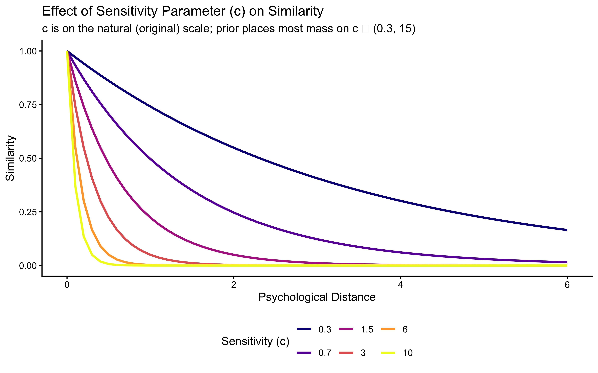
3. Category Response Probability
\[P(A|i) = \frac{\beta \; \bar\eta_{i,A}}{\beta \; \bar\eta_{i,A} + (1-\beta) \; \bar\eta_{i,B}}, \qquad \bar\eta_{i,A} = \frac{1}{N_A} \sum_{j \in A} \eta_{ij}\]
where \(\bar\eta_{i,A}\) is the mean similarity of the current stimulus to the exemplars stored under category \(A\), and \(N_A\) is the count of those stored exemplars. The cold-start fallback applies when either category has no stored exemplars yet: \(P(A|i) = \beta\).
The original GCM (Nosofsky 1986) and the ALCOVE extensions (John K. Kruschke 1992) use the summed form \(\sum_{j \in A} \eta_{ij}\) rather than the mean. That choice carries a subtle but consequential assumption: whichever category has more stored exemplars acquires a systematic advantage, independent of how similar any of those exemplars is to the current stimulus.
A concrete failure. Suppose category A has 12 stored exemplars at distance roughly \(d = 2\) from the current stimulus (so each contributes \(\eta_{ij} \approx e^{-2c}\)) and category B has 1 stored exemplar at distance \(d = 0.2\) (contributing \(\eta_{ij} \approx e^{-0.2c}\)). At a moderate sensitivity \(c = 1\):
The bias parameter \(\beta\) cannot repair this. Fitting \(\beta\) to the data will compensate for the average frequency imbalance, but cannot fix it trial-by-trial because the imbalance itself grows and shrinks as the memory store evolves.
This chapter therefore uses the mean-similarity formulation throughout, which is the form adopted by Ashby and Maddox (1993) and by several later papers that explicitly address this point. At \(N_A = N_B\) (the canonical Kruschke task with balanced training) the two formulations produce effectively identical behaviour, so replication of published Kruschke-era results is unaffected. On data with unequal base rates, partial trial sequences, or the non-stationary scenarios introduced later in this chapter — where memory composition changes meaningfully over trials — the difference becomes both measurable and interpretable: with mean similarity, \(\beta\) becomes a clean response-bias parameter rather than a fitted compensator for implicit base-rate effects.
# Toy demonstration of the summed-vs-mean choice with deliberately
# unbalanced memory contents. 12 cat-A exemplars far away, 1 cat-B
# exemplar close by. We show choice probabilities under both forms.
demo_memory <- tibble(
category = c(rep(0, 12), 1),
sim = c(rep(exp(-2), 12), exp(-0.2)) # pre-computed for c = 1
)
demo_sums <- demo_memory |>
group_by(category) |>
summarise(sum_sim = sum(sim), mean_sim = mean(sim), .groups = "drop")
demo_sums |>
mutate(
p_cat1_summed = sum_sim / sum(sum_sim),
p_cat1_mean = mean_sim / sum(mean_sim)
) |>
print()# A tibble: 2 × 5
category sum_sim mean_sim p_cat1_summed p_cat1_mean
<dbl> <dbl> <dbl> <dbl> <dbl>
1 0 1.62 0.135 0.665 0.142
2 1 0.819 0.819 0.335 0.858# Summed: P(cat 1) ≈ 0.34 — the 12 distant exemplars in category 0 win.
# Mean: P(cat 1) ≈ 0.85 — the 1 close exemplar in category 1 correctly wins.The demonstration above uses bias \(\beta = 0.5\) (neutral) so the asymmetry comes purely from the aggregation choice. All figures, recovery results, and SBC checks in the rest of this chapter use the mean-similarity form. Readers who want to reproduce a published summed-similarity study can swap the aggregation line in gcm_simulate() (replace each mean() with sum()) and the corresponding two lines in the Stan model (remove the division by n1 and n0) without any other changes.
# Generative GCM model function.
gcm_simulate <- function(w, # attention weights (sums to 1)
c, # sensitivity (natural scale, strictly positive)
bias, # response bias towards category 1
obs, # matrix of stimulus features (trials x features)
cat_feedback, # true category labels (0 or 1)
quiet = TRUE) {
ntrials <- nrow(obs)
nfeatures <- ncol(obs)
prob_cat1 <- numeric(ntrials)
sim_response <- numeric(ntrials)
memory_obs <- matrix(NA_real_, nrow = 0, ncol = nfeatures)
memory_cat <- numeric(0)
for (i in seq_len(ntrials)) {
if (!quiet && i %% 20 == 0) cat("Simulating trial:", i, "\n")
current_stim <- as.numeric(obs[i, ])
n_mem <- nrow(memory_obs)
has_cat0 <- any(memory_cat == 0)
has_cat1 <- any(memory_cat == 1)
if (n_mem == 0 || !has_cat0 || !has_cat1) {
prob_cat1[i] <- bias
} else {
sims <- vapply(seq_len(n_mem), function(e) {
similarity(distance(current_stim, memory_obs[e, ], w), c)
}, numeric(1))
# Mean similarity per category — removes category-frequency bias.
m1 <- mean(sims[memory_cat == 1])
m0 <- mean(sims[memory_cat == 0])
num <- bias * m1
den <- num + (1 - bias) * m0
prob_cat1[i] <- if (den > 1e-9) num / den else bias
prob_cat1[i] <- pmax(1e-9, pmin(1 - 1e-9, prob_cat1[i]))
}
sim_response[i] <- rbinom(1, 1, prob_cat1[i])
memory_obs <- rbind(memory_obs, current_stim)
memory_cat <- c(memory_cat, cat_feedback[i])
}
tibble(prob_cat1 = prob_cat1, sim_response = sim_response)
}To test our GCM implementation, we need a stimulus environment that is more complex than a simple linear separation but structured enough to reveal cognitive principles. We adopt the setup from John K. Kruschke (1993) for three specific reasons:
Continuous Dimension Benchmarking: Unlike earlier binary-feature tasks (e.g., Medin and Schaffer (1978)), Kruschke uses stimuli (rectangles varying in height and position) that occupy a continuous 2D psychological space. This is the natural environment for the GCM’s Minkowski distance metrics.
Testing Selective Attention: The task is designed so that both dimensions (height and position) are relevant, but their importance depends on the specific stimuli. This allows us to observe whether our model can “discover” the optimal attention weights (\(w\)) to minimize categorization error—a core feature of the ALCOVE extension to the GCM.
Non-Linearity & Abstraction: The category structure (plotted below) is not perfectly separable by a single horizontal or vertical line. It requires the agent to either learn a diagonal boundary or to store the specific exemplars that form the “corners” of each category. This makes it a diagnostic benchmark for comparing exemplar models against the prototype models we’ll see in Chapter 13.
stimulus_info <- tibble(
stimulus = c(5, 3, 7, 1, 8, 2, 6, 4),
height = c(1, 1, 2, 2, 3, 3, 4, 4),
position = c(2, 3, 1, 4, 1, 4, 2, 3),
category_true = c(0, 0, 1, 0, 1, 0, 1, 1)
)
ggplot(stimulus_info, aes(x = position, y = height,
color = factor(category_true), label = stimulus)) +
geom_point(size = 5) +
geom_text(nudge_y = 0.18) +
scale_color_manual(values = c("0" = "#0072B2", "1" = "#D55E00"), name = "Category") +
labs(title = "@kruschke1993human Stimulus Structure", x = "Position", y = "Height") +
coord_fixed()
n_blocks <- 8
n_stim_per_block <- nrow(stimulus_info)
total_trials <- n_blocks * n_stim_per_blockmake_subject_schedule <- function(stimulus_info, n_blocks, seed) {
set.seed(seed)
n_stim <- nrow(stimulus_info)
sequence <- unlist(lapply(seq_len(n_blocks), function(b) {
sample(stimulus_info$stimulus, n_stim, replace = FALSE)
}))
tibble(
trial_within_subject = seq_along(sequence),
block = rep(seq_len(n_blocks), each = n_stim),
stimulus_id = sequence
) |>
left_join(stimulus_info, by = c("stimulus_id" = "stimulus")) |>
rename(category_feedback = category_true) |>
dplyr::select(trial_within_subject, block, stimulus_id,
height, position, category_feedback)
}simulate_gcm_agent <- function(agent_id, w_true, c_true, bias_true,
stimulus_info, n_blocks, subject_seed) {
schedule <- make_subject_schedule(stimulus_info, n_blocks, seed = subject_seed)
obs <- schedule |> dplyr::select(height, position)
feedback <- schedule$category_feedback
sim_results <- gcm_simulate(
w = w_true, c = c_true, bias = bias_true,
obs = obs, cat_feedback = feedback, quiet = TRUE
)
schedule |>
mutate(
agent_id = agent_id,
w1_true = w_true[1],
w2_true = w_true[2],
c_true = c_true,
log_c_true = log(c_true),
bias_true = bias_true,
prob_cat1 = sim_results$prob_cat1,
sim_response = sim_results$sim_response,
correct = as.integer(category_feedback == sim_response)
) |>
group_by(agent_id) |>
mutate(performance = cumsum(correct) / row_number()) |>
ungroup()
}param_grid <- expand_grid(
w_setting = list(c(0.5, 0.5), c(0.7, 0.3), c(0.9, 0.1)),
c_setting = c(0.5, 1.0, 2.0, 4.0, 5.0, 15.0),
bias_setting = 0.5
) |>
mutate(
setting_id = row_number(),
w_label = map_chr(w_setting, ~paste(round(.x, 1), collapse = ",")),
c_label = paste0("c≈", round(c_setting, 1)),
label = paste0("w=(", w_label, "), ", c_label)
)
n_agents_per_setting <- 5
simulation_plan <- param_grid |>
uncount(n_agents_per_setting) |>
mutate(agent_id = row_number())
sim_file <- here("simdata", "ch12_gcm_simulated_responses.csv")
if (regenerate_simulations || !file.exists(sim_file)) {
plan(multisession, workers = max(1, availableCores() - 1))
simulated_responses <- future_pmap_dfr(
list(
agent_id = simulation_plan$agent_id,
w_true = simulation_plan$w_setting,
c_true = simulation_plan$c_setting,
bias_true = simulation_plan$bias_setting
),
simulate_gcm_agent,
stimulus_info = stimulus_info,
n_blocks = n_blocks,
subject_seed = simulation_plan$agent_id,
.options = furrr_options(seed = TRUE)
)
plan(sequential)
write_csv(simulated_responses, sim_file)
cat("Simulation complete. Results saved.\n")
} else {
simulated_responses <- read_csv(sim_file, show_col_types = FALSE)
cat("Loaded existing simulation results.\n")
}Loaded existing simulation results.simulated_responses_labeled <- simulated_responses |>
mutate(
w_label = paste0("w=(", round(w1_true, 1), ",", round(w2_true, 1), ")"),
c_label = paste0("c≈", round(c_true, 1)),
# Order the c_label factor based on the numeric c_true values
c_label = forcats::fct_reorder(c_label, c_true)
)
p_c_effect <- ggplot(
simulated_responses_labeled,
aes(x = trial_within_subject, y = performance,
color = factor(round(c_true, 1)),
group = interaction(agent_id, round(c_true, 1)))
) +
stat_summary(fun = mean, geom = "line",
aes(group = factor(round(c_true, 1))), linewidth = 1.2) +
facet_wrap(~w_label) +
scale_color_viridis_d(option = "plasma", name = "Sensitivity (c)") +
labs(
title = "Effect of Sensitivity (c) on GCM Learning",
subtitle = "Mean across simulated agents",
x = "Trial", y = "Cumulative Accuracy"
) +
theme(legend.position = "bottom")
p_w_effect <- ggplot(
simulated_responses_labeled,
aes(x = trial_within_subject, y = performance,
color = w_label, group = interaction(agent_id, w_label))
) +
stat_summary(fun = mean, geom = "line", aes(group = w_label), linewidth = 1.2) +
facet_wrap(~c_label) +
scale_color_brewer(palette = "Set1", name = "Attention Weights") +
labs(
title = "Effect of Attention Weights (w) on GCM Learning",
subtitle = "Mean across simulated agents",
x = "Trial", y = "Cumulative Accuracy"
) +
theme(legend.position = "bottom")
p_c_effect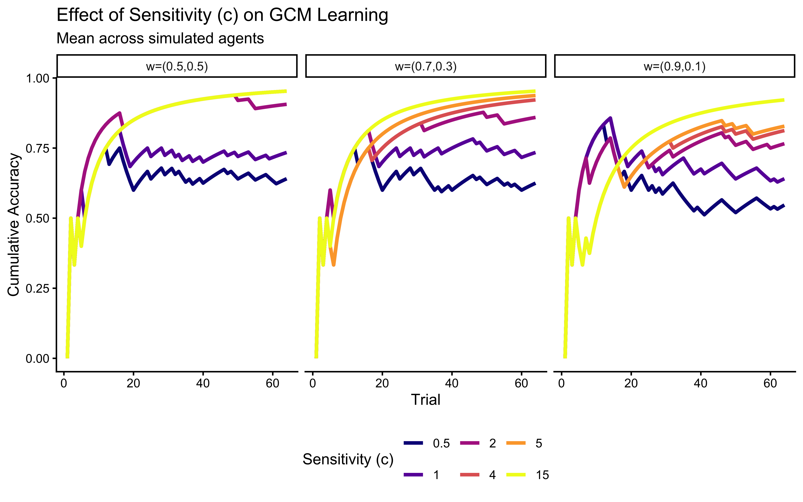
p_w_effect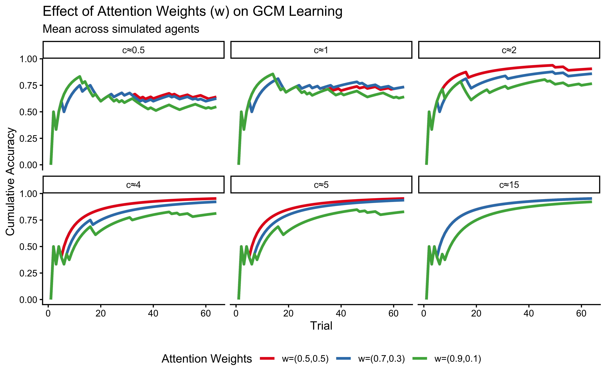
We need to define the priors for the Stan model already here:
n_prior_samples <- 500
prior_draws <- tibble(
sample_id = seq_len(n_prior_samples),
log_c = rnorm(n_prior_samples, LOG_C_PRIOR_MEAN, LOG_C_PRIOR_SD),
w1 = runif(n_prior_samples),
bias = rbeta(n_prior_samples, 1, 1)
) |>
mutate(c_true = exp(log_c), w2 = 1 - w1)
ppc_schedule <- make_subject_schedule(stimulus_info, n_blocks, seed = 999)
prior_pred_curves <- pmap_dfr(
list(
sample_id = prior_draws$sample_id,
log_c = prior_draws$log_c,
w1 = prior_draws$w1,
bias = prior_draws$bias
),
function(sample_id, log_c, w1, bias) {
c <- exp(log_c)
sim <- gcm_simulate(
w = c(w1, 1 - w1), c = c, bias = bias,
obs = ppc_schedule |> dplyr::select(height, position),
cat_feedback = ppc_schedule$category_feedback
)
tibble(
sample_id = sample_id,
trial = seq_len(nrow(ppc_schedule)),
correct = as.integer(sim$sim_response == ppc_schedule$category_feedback)
) |>
mutate(cum_acc = cumsum(correct) / row_number())
}
)
prior_pred_summary <- prior_pred_curves |>
group_by(trial) |>
summarise(
q05 = quantile(cum_acc, 0.05),
q25 = quantile(cum_acc, 0.25),
q50 = median(cum_acc),
q75 = quantile(cum_acc, 0.75),
q95 = quantile(cum_acc, 0.95),
.groups = "drop"
)
ggplot(prior_pred_summary, aes(x = trial)) +
geom_ribbon(aes(ymin = q05, ymax = q95), fill = "#56B4E9", alpha = 0.20) +
geom_ribbon(aes(ymin = q25, ymax = q75), fill = "#56B4E9", alpha = 0.40) +
geom_line(aes(y = q50), color = "#0072B2", linewidth = 1) +
geom_hline(yintercept = 0.5, linetype = "dashed", color = "grey40") +
scale_y_continuous(limits = c(0, 1)) +
labs(
title = "Prior Predictive Check: GCM Learning Curves",
subtitle = "Ribbons: 50% and 90% prior predictive intervals; line: median\nPriors: log(c) ~ Normal(log 2, 1), w ~ Dirichlet(1,1), bias ~ Beta(1,1)",
x = "Trial", y = "Cumulative Accuracy"
)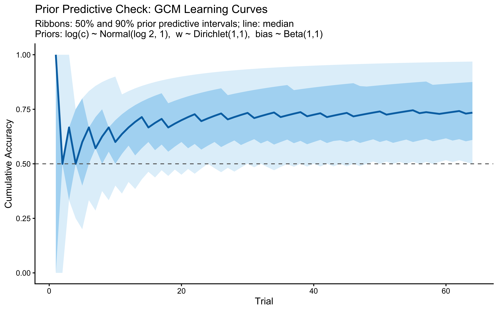
The DAG formalizes the four-stage structure from §Mathematical Formulation above: priors on \((w, \log c, \beta)\) feed into attention-weighted city-block distances, which yield per-category mean similarities, which enter the Luce choice rule to produce \(p_i\); the response \(y_i\) is then a Bernoulli draw.
\usetikzlibrary{bayesnet}
\begin{tikzpicture}
% ── Hyperparameters (const) ─────────────────────────────
\node[const] (alpha_w) at (0, 0) {$\boldsymbol{\alpha}_w$};
\node[const] (hyp_c) at (4, 0) {$\mu_c,\,\sigma_c$};
\node[const] (hyp_b) at (8, 0) {$\alpha_\beta,\,\beta_\beta$};
% ── Latent parameters ───────────────────────────────────
\node[latent] (w) at (0, -2) {$\mathbf{w}$};
\node[latent] (logc) at (4, -2) {$\log c$};
\node[latent] (bias) at (8, -2) {$\beta$};
% ── Trial-level nodes (inside plate) ────────────────────
\node[obs] (xi) at (2, -4.5) {$\mathbf{x}_i$};
\node[obs] (zi) at (4, -4.5) {$z_{<i}$};
\node[det] (pi) at (6, -4.5) {$p_i$};
\node[obs] (yi) at (6, -6.5) {$y_i$};
% ── Edges ───────────────────────────────────────────────
\edge {alpha_w} {w};
\edge {hyp_c} {logc};
\edge {hyp_b} {bias};
\edge {w, logc, bias} {pi};
\edge {xi, zi} {pi};
\edge {pi} {yi};
% ── Plate ───────────────────────────────────────────────
\plate {trial} {(xi)(zi)(pi)(yi)} {$N$ trials};
\end{tikzpicture}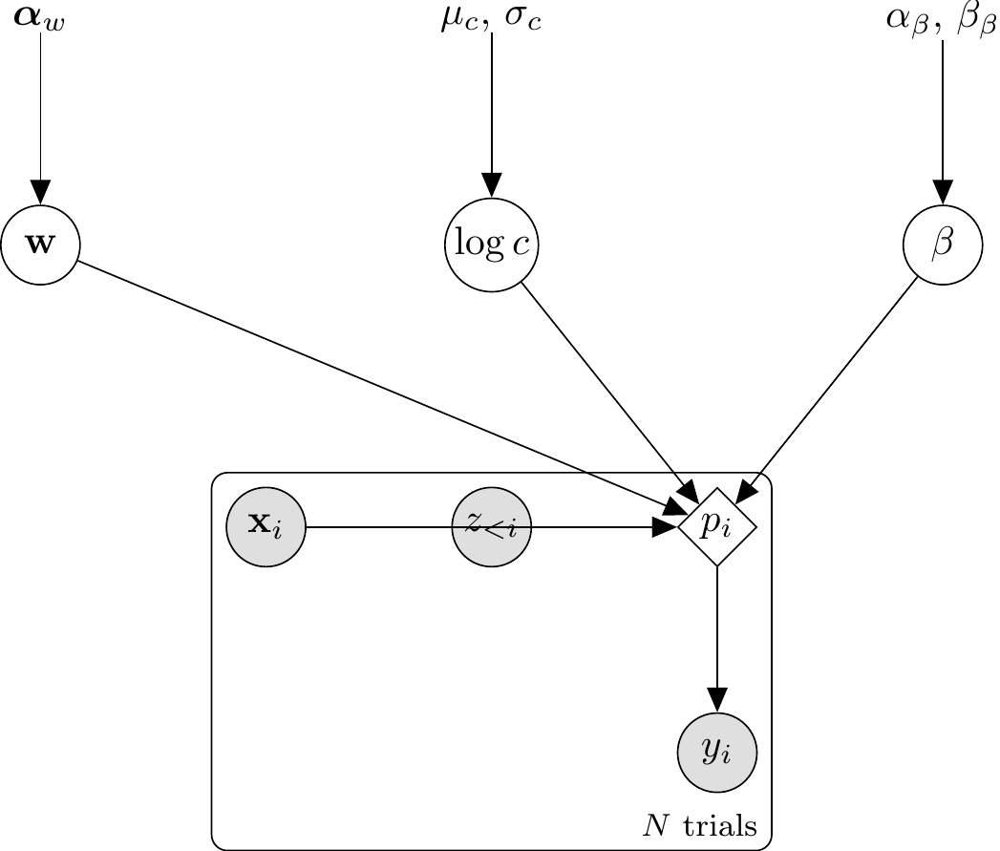
gcm_single_stan <- "
// Generalized Context Model — Single Subject (refactored architecture)
data {
int<lower=1> N_total;
int<lower=1> N_features;
array[N_total] int<lower=0, upper=1> y;
array[N_total, N_features] real obs;
array[N_total] int<lower=0, upper=1> cat_feedback;
vector[N_features] prior_w_alpha;
real prior_log_c_mu;
real<lower=0> prior_log_c_sigma;
real<lower=0> prior_bias_alpha;
real<lower=0> prior_bias_beta;
int<lower=0, upper=1> run_diagnostics;
}
transformed data {
array[N_total, N_total, N_features] real abs_diff;
for (i in 1:N_total) {
for (j in 1:N_total) {
for (f in 1:N_features) {
abs_diff[i, j, f] = abs(obs[i, f] - obs[j, f]);
}
}
}
}
parameters {
simplex[N_features] w;
real log_c;
real<lower=0, upper=1> bias;
}
transformed parameters {
real<lower=0> c = exp(log_c);
vector<lower=1e-9, upper=1-1e-9>[N_total] prob_cat1;
{
array[N_total] int memory_trial_idx;
array[N_total] int memory_cat;
int n_mem = 0;
for (i in 1:N_total) {
real p_i;
int has_cat0 = 0;
int has_cat1 = 0;
for (k in 1:n_mem) {
if (memory_cat[k] == 0) has_cat0 = 1;
if (memory_cat[k] == 1) has_cat1 = 1;
}
if (n_mem == 0 || has_cat0 == 0 || has_cat1 == 0) {
p_i = bias;
} else {
real s1 = 0; real s0 = 0;
int n1 = 0; int n0 = 0;
for (e in 1:n_mem) {
real d = 0;
int past_i = memory_trial_idx[e];
for (f in 1:N_features)
d += w[f] * abs_diff[i, past_i, f];
real sim = exp(-c * d);
if (memory_cat[e] == 1) { s1 += sim; n1 += 1; }
else { s0 += sim; n0 += 1; }
}
real m1 = s1 / n1;
real m0 = s0 / n0;
real num = bias * m1;
real den = num + (1 - bias) * m0;
p_i = (den > 1e-9) ? num / den : bias;
}
prob_cat1[i] = fmax(1e-9, fmin(1 - 1e-9, p_i));
n_mem += 1;
memory_trial_idx[n_mem] = i;
memory_cat[n_mem] = cat_feedback[i];
}
}
}
model {
target += dirichlet_lpdf(w | prior_w_alpha);
target += normal_lpdf(log_c | prior_log_c_mu, prior_log_c_sigma);
target += beta_lpdf(bias | prior_bias_alpha, prior_bias_beta);
target += bernoulli_lpmf(y | prob_cat1);
}
generated quantities {
vector[N_total] log_lik;
real lprior;
if (run_diagnostics) {
for (i in 1:N_total)
log_lik[i] = bernoulli_lpmf(y[i] | prob_cat1[i]);
}
lprior = dirichlet_lpdf(w | prior_w_alpha) +
normal_lpdf(log_c | prior_log_c_mu, prior_log_c_sigma) +
beta_lpdf(bias | prior_bias_alpha, prior_bias_beta);
}
"
stan_file_gcm_single <- "stan/ch12_gcm_single.stan"
write_stan_file(gcm_single_stan, dir = "stan/", basename = "ch12_gcm_single.stan")[1] "/Users/au209589/Dropbox/Teaching/AdvancedCognitiveModeling23_book/stan/ch12_gcm_single.stan"mod_gcm_single <- cmdstan_model(stan_file_gcm_single)transformed data: Builds the abs_diff[i, j, f] tensor. Evaluated exactly once per chain.parameters: simplex[N_features] w, unconstrained real log_c, and real<lower=0, upper=1> bias.transformed parameters: Brings back the constraints on the parameters, and caches prob_cat1[i] in a single forward pass over trials. Because the GCM’s per-trial choice probability \(p_i\) is a deterministic function of the parameters \((w, c, \beta)\) and the data sequence, it belongs here as a single source of truth.model: Priors followed by a vectorised one-line likelihood. By pre-calculating the probabilities in transformed parameters, the model{} block becomes a simple one-line Bernoulli call.generated quantities: log_lik[i] as a per-trial lookup, and lprior for priorsense. This block also benefits from the lookup against the already-computed prob_cat1 vector.A note on reduce_sum and parallelization: The GCM’s inner loop cannot be parallelized with reduce_sum because trial \(t\)’s contribution to target depends on the memory state accumulated sequentially from trials \(1, \ldots, t-1\).
# Select one simulated agent: w ≈ (0.9, 0.1), c ≈ 2
agent_to_fit <- simulated_responses |>
filter(
round(w1_true, 1) == 0.9,
abs(log_c_true - log(2.0)) == min(abs(log_c_true - log(2.0)))
) |>
filter(agent_id == min(agent_id)) |>
slice(1:total_trials)
stopifnot(nrow(agent_to_fit) == total_trials)
gcm_data_single <- list(
N_total = nrow(agent_to_fit),
N_features = 2L,
y = as.integer(agent_to_fit$sim_response),
obs = as.matrix(agent_to_fit[, c("height", "position")]),
cat_feedback = as.integer(agent_to_fit$category_feedback),
prior_w_alpha = c(1, 1),
prior_log_c_mu = LOG_C_PRIOR_MEAN,
prior_log_c_sigma = LOG_C_PRIOR_SD,
prior_bias_alpha = 1,
prior_bias_beta = 1,
run_diagnostics = 1L
)
fit_filepath_single <- here("simmodels", "ch12_gcm_single_fit.rds")
if (regenerate_simulations || !file.exists(fit_filepath_single)) {
pf_single <- tryCatch(
mod_gcm_single$pathfinder(
data = gcm_data_single,
seed = 123,
num_paths = 4,
refresh = 0
),
error = function(e) {
message("Pathfinder failed — falling back to default initialisation.")
NULL
}
)
fit_gcm_single <- mod_gcm_single$sample(
data = gcm_data_single,
init = pf_single,
seed = 123,
chains = 4,
parallel_chains = min(4, availableCores()),
iter_warmup = 1000,
iter_sampling = 1500,
refresh = 300,
adapt_delta = 0.9
)
fit_gcm_single$save_object(fit_filepath_single)
cat("Single-agent model fitted and saved.\n")
} else {
fit_gcm_single <- readRDS(fit_filepath_single)
cat("Loaded existing single-agent fit.\n")
}Loaded existing single-agent fit.if (!is.null(fit_gcm_single)) {
diag_tbl <- diagnostic_summary_table(
fit_gcm_single,
params = c("w[1]", "w[2]", "log_c", "c", "bias")
)
print(diag_tbl)
if (!all(diag_tbl$pass)) {
warning("Diagnostic battery has failures — interpret posteriors with caution.")
}
bayesplot::mcmc_trace(
fit_gcm_single$draws(c("log_c", "w[1]", "bias")),
facet_args = list(ncol = 1)
)
bayesplot::mcmc_rank_overlay(
fit_gcm_single$draws(c("log_c", "w[1]", "bias"))
)
}# A tibble: 6 × 4
metric value threshold pass
<chr> <dbl> <chr> <lgl>
1 Divergences (zero tolerance) 0 == 0 TRUE
2 Max rank-normalised R-hat 1.00 < 1.01 TRUE
3 Min bulk ESS 2921. > 400 TRUE
4 Min tail ESS 1989. > 400 TRUE
5 Min E-BFMI 0.873 > 0.2 TRUE
6 Max MCSE / posterior SD 0.0162 < 0.05 TRUE 
if (!is.null(fit_gcm_single)) {
prob_draws <- fit_gcm_single$draws("prob_cat1", format = "matrix")
n_draws <- nrow(prob_draws)
n_trials <- ncol(prob_draws)
set.seed(2025)
yrep_post <- matrix(rbinom(n_draws * n_trials, 1, as.vector(prob_draws)),
nrow = n_draws)
obs_acc <- cummean(agent_to_fit$sim_response == agent_to_fit$category_feedback)
rep_acc <- t(apply(yrep_post, 1, function(yr) {
cummean(yr == agent_to_fit$category_feedback)
}))
ppc_summary <- tibble(
trial = seq_len(n_trials),
obs = obs_acc,
q05 = apply(rep_acc, 2, quantile, 0.05),
q25 = apply(rep_acc, 2, quantile, 0.25),
q50 = apply(rep_acc, 2, quantile, 0.50),
q75 = apply(rep_acc, 2, quantile, 0.75),
q95 = apply(rep_acc, 2, quantile, 0.95)
)
ggplot(ppc_summary, aes(x = trial)) +
geom_ribbon(aes(ymin = q05, ymax = q95), fill = "#56B4E9", alpha = 0.20) +
geom_ribbon(aes(ymin = q25, ymax = q75), fill = "#56B4E9", alpha = 0.40) +
geom_line(aes(y = q50), color = "#0072B2", linewidth = 0.8) +
geom_line(aes(y = obs), color = "#D55E00", linewidth = 1) +
scale_y_continuous(limits = c(0, 1)) +
labs(
title = "Posterior Predictive Check: Cumulative Accuracy",
subtitle = "Blue ribbons: 50% and 90% posterior predictive intervals\nOrange line: observed cumulative accuracy",
x = "Trial", y = "Cumulative Accuracy"
)
}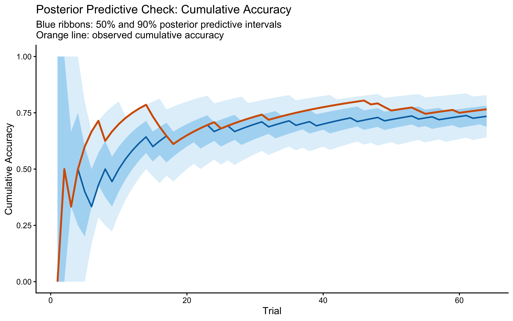
Note that we picked cumulative accuracy as target measure for the PPC because it is a more holistic summary of the learning dynamics than trial-level accuracy. The GCM’s path-dependence means that trial-level predictions are noisier and less informative about model fit. We could have also picked other behaviors, such as the evolving distribution of attention-weighted distances to exemplars, or specific contrast
if (!is.null(fit_gcm_single)) {
draws_df <- as_draws_df(
fit_gcm_single$draws(variables = c("w[1]", "log_c", "c", "bias"))
)
true_w1 <- agent_to_fit$w1_true[1]
true_log_c <- agent_to_fit$log_c_true[1]
true_c <- agent_to_fit$c_true[1]
true_bias <- agent_to_fit$bias_true[1]
set.seed(2026)
n_prior <- 4000
prior_df <- tibble(
`w[1]` = runif(n_prior),
log_c = rnorm(n_prior, LOG_C_PRIOR_MEAN, LOG_C_PRIOR_SD),
c = exp(log_c),
bias = rbeta(n_prior, 1, 1)
)
pp_panel <- function(prior_x, post_x, true_val, label) {
tibble(
x = c(prior_x, post_x),
source = c(rep("Prior", length(prior_x)),
rep("Posterior", length(post_x)))
) |>
ggplot(aes(x = x, fill = source, color = source)) +
geom_density(alpha = 0.4, linewidth = 0.5) +
geom_vline(xintercept = true_val, color = "red",
linetype = "dashed", linewidth = 0.7) +
scale_fill_manual(values = c(Prior = "grey60", Posterior = "#0072B2")) +
scale_color_manual(values = c(Prior = "grey40", Posterior = "#0072B2")) +
labs(title = label, x = NULL, y = "Density") +
theme(legend.position = "bottom")
}
p1 <- pp_panel(prior_df$`w[1]`, draws_df$`w[1]`, true_w1, "w[1]")
p2 <- pp_panel(prior_df$log_c, draws_df$log_c, true_log_c, "log(c) — computational scale")
p3 <- pp_panel(prior_df$c, draws_df$c, true_c, "c — natural scale")
p4 <- pp_panel(prior_df$bias, draws_df$bias, true_bias, "bias")
(p1 | p2) / (p3 | p4) +
plot_annotation(
title = "Prior–Posterior Update for the Single-Subject GCM",
subtitle = "Red dashed line = true generating value"
)
}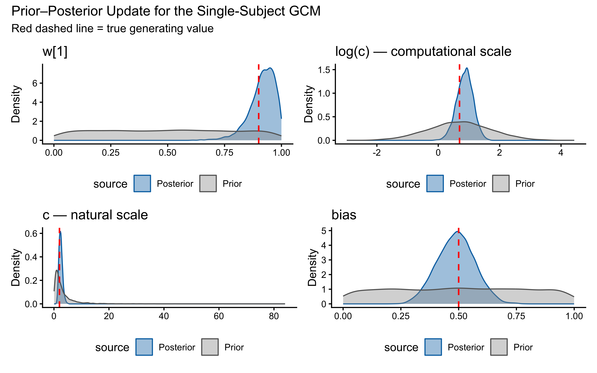
This looks surprisingly good! — the posterior for \(w[1]\) is tightly concentrated around the true value of 0.9, and the posterior for \(\log c\) is also well-concentrated around the true \(\log(2)\). The bias parameter is less informed, which makes sense given that it has a more indirect influence on the choice probabilities.
if (!is.null(fit_gcm_single)) {
bayesplot::mcmc_pairs(
fit_gcm_single$draws(c("log_c", "w[1]", "bias")),
diag_fun = "dens",
off_diag_fun = "hex"
)
}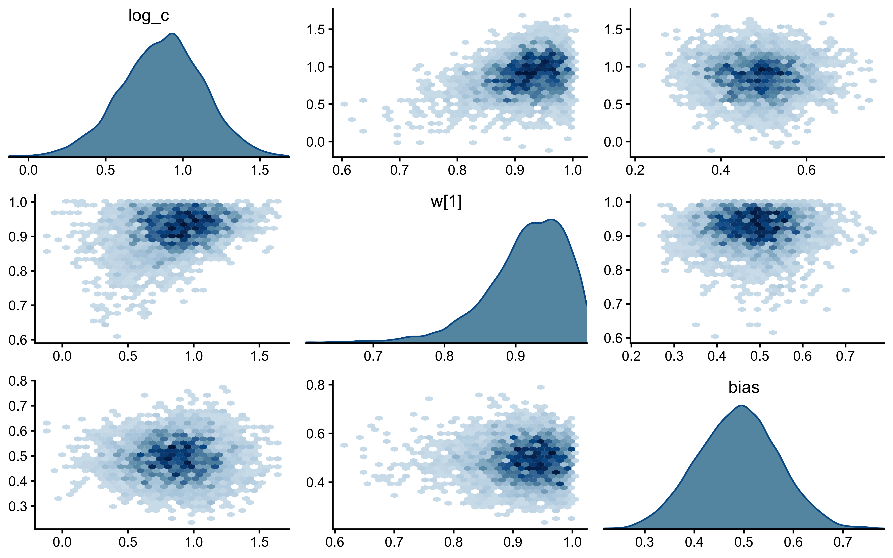
The parameters look nicely uncorrelated.
While standard PSIS-LOO doesn’t capture the path dependency of the model, it can still highlight issues with influential datapoints, so we calculate it.
if (!is.null(fit_gcm_single)) {
log_lik_mat <- fit_gcm_single$draws("log_lik", format = "matrix")
loo_gcm_single <- loo::loo(log_lik_mat, cores = 4)
print(loo_gcm_single)
plot(loo_gcm_single, label_points = TRUE,
main = "PSIS-LOO Pareto-k diagnostics: Single-subject GCM")
}
Computed from 6000 by 64 log-likelihood matrix.
Estimate SE
elpd_loo -29.2 3.6
p_loo 2.4 0.5
looic 58.4 7.1
------
MCSE of elpd_loo is 0.0.
MCSE and ESS estimates assume independent draws (r_eff=1).
All Pareto k estimates are good (k < 0.7).
See help('pareto-k-diagnostic') for details.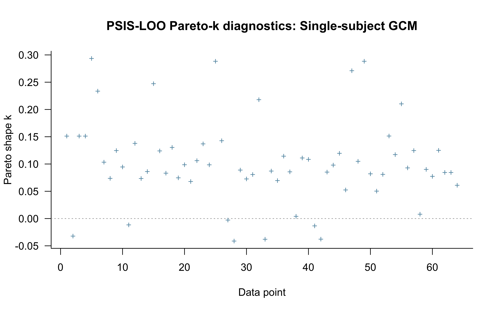
LFO-CV (Bürkner, Gabry, & Vehtari, 2020) estimates the one-step-ahead predictive density, to preserve the path-dependency of our model’s behavior. The PSIS approximation refits only when the importance sampling deteriorates (\(\hat{k} > k_\text{thresh}\)) and uses importance reweighting otherwise.
psis_lfo_gcm <- function(stan_model,
full_data,
L = 16,
k_thresh = 0.7,
seed = 1,
verbose = FALSE) {
fit_subset <- function(n_train, seed) {
sub_data <- full_data
sub_data$N_total <- n_train
sub_data$y <- sub_data$y[1:n_train]
sub_data$obs <- sub_data$obs[1:n_train, , drop = FALSE]
sub_data$cat_feedback <- sub_data$cat_feedback[1:n_train]
pf <- stan_model$pathfinder(data = sub_data, num_paths = 4, refresh = 0,
seed = seed)
fit <- stan_model$sample(
data = sub_data, init = pf, seed = seed,
chains = 2, parallel_chains = 2,
iter_warmup = 600, iter_sampling = 800,
refresh = 0, adapt_delta = 0.9
)
fit
}
predict_future <- function(fit, full_data) {
full_n <- length(full_data$y)
ext_data <- full_data
ext_data$N_total <- full_n
gq_fit <- stan_model$generate_quantities(
fitted_params = fit,
data = ext_data,
seed = seed,
parallel_chains = 2
)
gq_fit$draws("log_lik", format = "matrix")
}
T_total <- length(full_data$y)
elpd_lfo <- numeric(T_total)
elpd_lfo[] <- NA_real_
refits <- integer(0)
k_history <- numeric(0)
fit_curr <- fit_subset(L, seed = seed)
ll_full_curr <- predict_future(fit_curr, full_data)
refits <- c(refits, L)
last_fit_n <- L
n_draws <- nrow(ll_full_curr)
ll_train_curr <- rowSums(ll_full_curr[, 1:L, drop = FALSE])
for (t in (L + 1):T_total) {
if (t - 1 == last_fit_n) {
k_t <- 0
k_history[t] <- k_t
lw <- rep(-log(n_draws), n_draws)
} else {
ll_train_target <- rowSums(ll_full_curr[, 1:(t - 1), drop = FALSE])
log_w <- ll_train_target - ll_train_curr
psis_obj <- loo::psis(log_w, r_eff = NA)
k_t <- loo::pareto_k_values(psis_obj)
k_history[t] <- k_t
if (k_t > k_thresh) {
if (verbose) cat("Refit at t =", t, "(k =", round(k_t, 3), ")\n")
fit_curr <- fit_subset(t - 1, seed = seed + t)
ll_full_curr <- predict_future(fit_curr, full_data)
ll_train_curr <- rowSums(ll_full_curr[, 1:(t - 1), drop = FALSE])
last_fit_n <- t - 1
refits <- c(refits, last_fit_n)
lw <- rep(-log(n_draws), n_draws)
} else {
lw <- as.numeric(weights(psis_obj))
}
}
lp <- ll_full_curr[, t]
elpd_lfo[t] <- matrixStats::logSumExp(lw + lp)
}
list(
elpd_lfo = sum(elpd_lfo, na.rm = TRUE),
elpd_pointwise = elpd_lfo,
refits = refits,
k_history = k_history,
L = L
)
}
lfo_filepath <- here("simdata", "ch12_lfo_single.rds")
if (regenerate_simulations || !file.exists(lfo_filepath)) {
lfo_single <- psis_lfo_gcm(
stan_model = mod_gcm_single,
full_data = gcm_data_single,
L = 16,
k_thresh = 0.7,
seed = 11,
verbose = TRUE
)
saveRDS(lfo_single, lfo_filepath)
} else {
lfo_single <- readRDS(lfo_filepath)
}
cat("LFO-CV ELPD (single subject):", round(lfo_single$elpd_lfo, 2), "\n")LFO-CV ELPD (single subject): -20.63 cat("Number of refits:", length(lfo_single$refits), "\n")Number of refits: 1 cat("Refit triggered at trials:", lfo_single$refits, "\n")Refit triggered at trials: 16 if (!is.null(fit_gcm_single)) {
loo_pw <- loo_gcm_single$pointwise[, "elpd_loo"]
comp_df <- tibble(
trial = seq_along(loo_pw),
elpd_loo = loo_pw,
elpd_lfo = lfo_single$elpd_pointwise
) |>
pivot_longer(starts_with("elpd_"), names_to = "method", values_to = "elpd")
ggplot(comp_df, aes(x = trial, y = elpd, color = method)) +
geom_line(alpha = 0.7) +
geom_point(alpha = 0.5) +
scale_color_manual(values = c(elpd_loo = "#0072B2", elpd_lfo = "#D55E00"),
labels = c("PSIS-LFO (correct)",
"PSIS-LOO (invalid for sequential)")) +
labs(
title = "Per-trial ELPD: LOO vs LFO-CV",
subtitle = "Differences are largest where the path-dependence assumption fails most",
x = "Trial", y = "Pointwise ELPD"
) +
theme(legend.position = "bottom")
}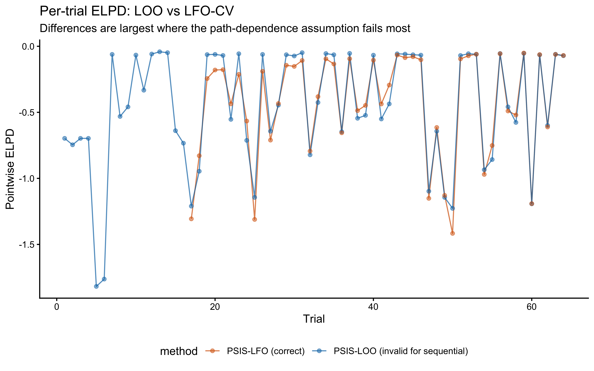
Validation against exact one-step-ahead refits.
exact_lfo_grid <- seq(16, length(gcm_data_single$y) - 1, by = 8)
exact_lfo_filepath <- here("simdata", "ch12_exact_lfo_single.rds")
if (regenerate_simulations || !file.exists(exact_lfo_filepath)) {
exact_results <- map_dfr(exact_lfo_grid, function(n_train) {
sub_data <- gcm_data_single
sub_data$N_total <- n_train
sub_data$y <- sub_data$y[1:n_train]
sub_data$obs <- sub_data$obs[1:n_train, , drop = FALSE]
sub_data$cat_feedback <- sub_data$cat_feedback[1:n_train]
pf <- mod_gcm_single$pathfinder(data = sub_data, num_paths = 4,
refresh = 0, seed = n_train)
fit <- mod_gcm_single$sample(
data = sub_data, init = pf, seed = n_train,
chains = 2, parallel_chains = 2,
iter_warmup = 600, iter_sampling = 800,
refresh = 0, adapt_delta = 0.9
)
ext <- gcm_data_single
gq <- mod_gcm_single$generate_quantities(
fitted_params = fit, data = ext, seed = n_train, parallel_chains = 2
)
ll_target <- gq$draws("log_lik", format = "matrix")[, n_train + 1]
elpd_exact <- matrixStats::logSumExp(ll_target) - log(length(ll_target))
tibble(trial = n_train + 1, elpd_exact = elpd_exact)
})
saveRDS(exact_results, exact_lfo_filepath)
} else {
exact_results <- readRDS(exact_lfo_filepath)
}
psis_at_grid <- tibble(
trial = exact_results$trial,
elpd_psis = lfo_single$elpd_pointwise[exact_results$trial]
)
agreement_df <- exact_results |>
left_join(psis_at_grid, by = "trial")
ggplot(agreement_df, aes(x = elpd_exact, y = elpd_psis)) +
geom_abline(intercept = 0, slope = 1, color = "red", linetype = "dashed") +
geom_point(size = 3, color = "#0072B2") +
labs(
title = "PSIS-LFO vs Exact One-Step-Ahead Refits",
subtitle = "Points should fall on the y = x line if PSIS-LFO is calibrated",
x = "Exact ELPD (refit per point)",
y = "PSIS-LFO ELPD"
) +
coord_fixed()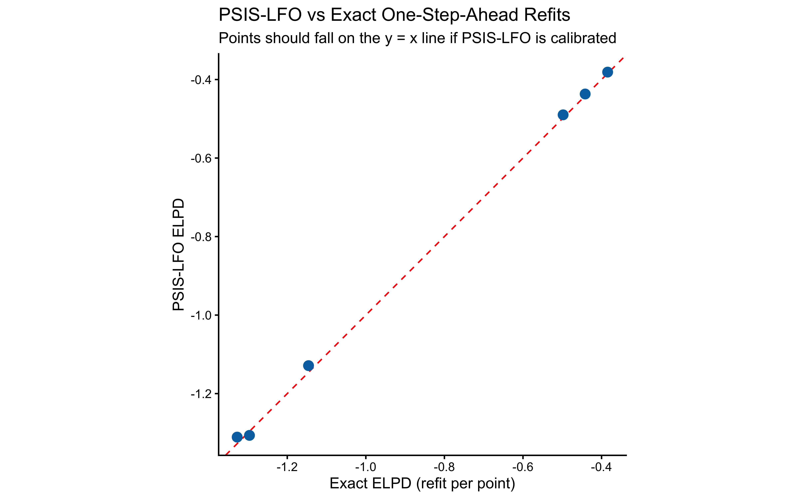
if (!is.null(fit_gcm_single)) {
prob_draws <- fit_gcm_single$draws("prob_cat1", format = "matrix")
log_lik_mat <- fit_gcm_single$draws("log_lik", format = "matrix")
psis_obj <- loo::psis(-log_lik_mat, r_eff = NA)
lw <- weights(psis_obj, normalize = TRUE)
y_obs <- gcm_data_single$y
loo_p_cat1 <- vapply(seq_along(y_obs), function(t) {
w <- exp(lw[, t] - matrixStats::logSumExp(lw[, t]))
sum(w * prob_draws[, t])
}, numeric(1))
set.seed(2027)
pit_vals <- ifelse(
y_obs == 1,
runif(length(y_obs), 1 - loo_p_cat1, 1),
runif(length(y_obs), 0, 1 - loo_p_cat1)
)
ggplot(tibble(pit = pit_vals), aes(x = pit)) +
geom_histogram(aes(y = after_stat(density)),
bins = 20, fill = "#0072B2", alpha = 0.7,
boundary = 0) +
geom_hline(yintercept = 1, color = "red", linetype = "dashed") +
scale_x_continuous(limits = c(0, 1)) +
labs(
title = "Randomised LOO-PIT for the Single-Subject GCM",
subtitle = "If the model is calibrated, PIT values are Uniform(0,1) (red dashed line)",
x = "Randomised LOO-PIT", y = "Density"
)
}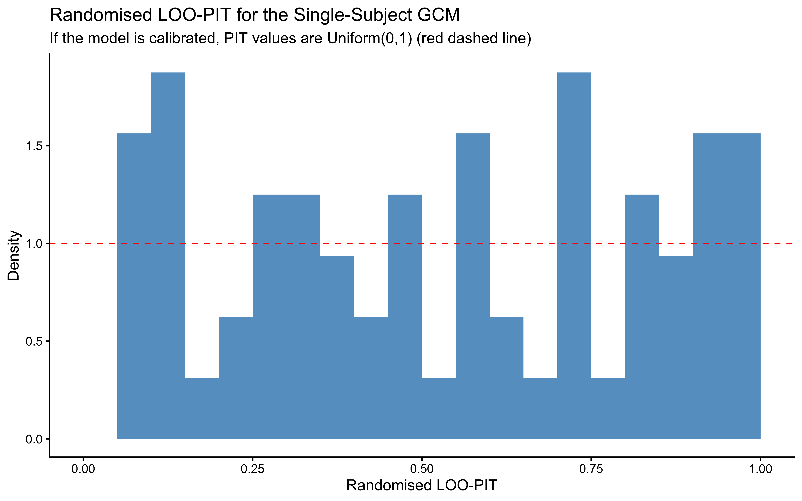
if (!is.null(fit_gcm_single)) {
ps <- priorsense::powerscale_sensitivity(fit_gcm_single)
print(ps)
priorsense::powerscale_plot_dens(
fit_gcm_single,
variables = c("log_c", "w[1]", "bias")
)
}Sensitivity based on cjs_dist
Prior selection: all priors
Likelihood selection: all data
variable prior likelihood diagnosis
w[1] 0.003 0.220 -
w[2] 0.003 0.220 -
log_c 0.010 0.112 -
bias 0.000 0.090 -
c 0.014 0.075 -
prob_cat1[1] 0.000 0.090 -
prob_cat1[2] 0.000 0.090 -
prob_cat1[3] 0.000 0.090 -
prob_cat1[4] 0.000 0.090 -
prob_cat1[5] 0.007 0.117 -
prob_cat1[6] 0.006 0.184 -
prob_cat1[7] 0.007 0.240 -
prob_cat1[8] 0.008 0.124 -
prob_cat1[9] 0.001 0.095 -
prob_cat1[10] 0.007 0.192 -
prob_cat1[11] 0.001 0.075 -
prob_cat1[12] 0.007 0.260 -
prob_cat1[13] 0.008 0.254 -
prob_cat1[14] 0.007 0.248 -
prob_cat1[15] 0.001 0.127 -
prob_cat1[16] 0.002 0.105 -
prob_cat1[17] 0.001 0.084 -
prob_cat1[18] 0.002 0.087 -
prob_cat1[19] 0.007 0.219 -
prob_cat1[20] 0.007 0.197 -
prob_cat1[21] 0.007 0.215 -
prob_cat1[22] 0.001 0.106 -
prob_cat1[23] 0.007 0.262 -
prob_cat1[24] 0.002 0.111 -
prob_cat1[25] 0.001 0.095 -
prob_cat1[26] 0.007 0.249 -
prob_cat1[27] 0.002 0.093 -
prob_cat1[28] 0.001 0.086 -
prob_cat1[29] 0.007 0.195 -
prob_cat1[30] 0.007 0.211 -
prob_cat1[31] 0.008 0.242 -
prob_cat1[32] 0.002 0.107 -
prob_cat1[33] 0.001 0.084 -
prob_cat1[34] 0.007 0.226 -
prob_cat1[35] 0.007 0.221 -
prob_cat1[36] 0.002 0.105 -
prob_cat1[37] 0.007 0.210 -
prob_cat1[38] 0.002 0.081 -
prob_cat1[39] 0.001 0.103 -
prob_cat1[40] 0.007 0.243 -
prob_cat1[41] 0.002 0.083 -
prob_cat1[42] 0.001 0.086 -
prob_cat1[43] 0.007 0.225 -
prob_cat1[44] 0.007 0.200 -
prob_cat1[45] 0.007 0.247 -
prob_cat1[46] 0.007 0.216 -
prob_cat1[47] 0.001 0.098 -
prob_cat1[48] 0.002 0.104 -
prob_cat1[49] 0.001 0.095 -
prob_cat1[50] 0.001 0.083 -
prob_cat1[51] 0.007 0.215 -
prob_cat1[52] 0.007 0.205 -
prob_cat1[53] 0.007 0.250 -
prob_cat1[54] 0.002 0.087 -
prob_cat1[55] 0.002 0.104 -
prob_cat1[56] 0.007 0.228 -
prob_cat1[57] 0.001 0.095 -
prob_cat1[58] 0.002 0.086 -
prob_cat1[59] 0.007 0.230 -
prob_cat1[60] 0.001 0.085 -
prob_cat1[61] 0.007 0.246 -
prob_cat1[62] 0.002 0.100 -
prob_cat1[63] 0.007 0.200 -
prob_cat1[64] 0.007 0.213 -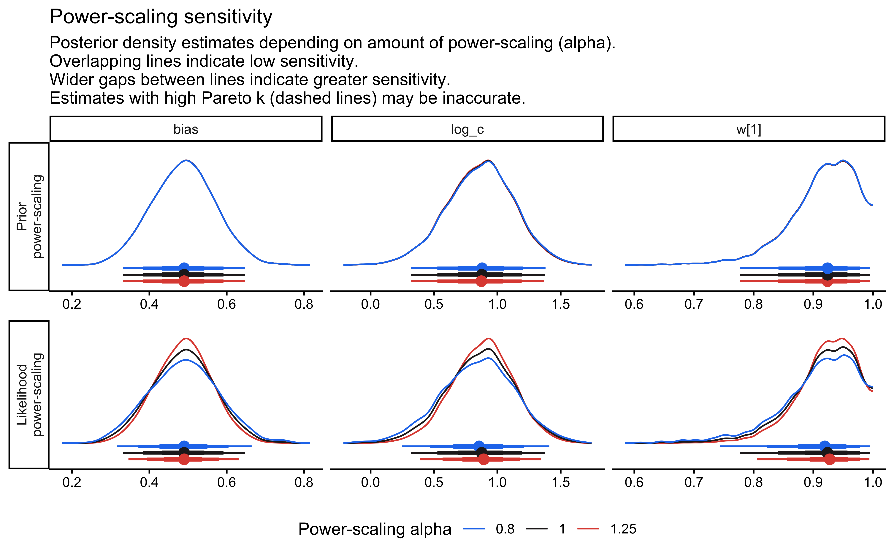
SBC checks the internal consistency and calibration of the entire Bayesian inference procedure across the whole prior. It asks: “If the true parameters really came from our specified priors, would our inference procedure produce posteriors that are statistically consistent with those priors?”
sbc_single_filepath <- here("simdata", "ch12_sbc_single_results.rds")
if (regenerate_simulations || !file.exists(sbc_single_filepath)) {
n_sbc_iterations_single <- 500 # use >= 1000 for publication-quality SBC
gcm_single_sbc_generator <- SBC_generator_function(
function() {
w_true <- as.numeric(MCMCpack::rdirichlet(1, c(1, 1)))
log_c_true <- rnorm(1, LOG_C_PRIOR_MEAN, LOG_C_PRIOR_SD)
c_true <- exp(log_c_true)
bias_true <- rbeta(1, 1, 1)
sbc_schedule <- make_subject_schedule(stimulus_info, n_blocks,
seed = sample.int(1e8, 1))
sim <- gcm_simulate(
w = w_true,
c = c_true,
bias = bias_true,
obs = sbc_schedule |> dplyr::select(height, position),
cat_feedback = sbc_schedule$category_feedback
)
list(
variables = list(
`w[1]` = w_true[1],
`w[2]` = w_true[2],
log_c = log_c_true,
bias = bias_true
),
generated = list(
N_total = nrow(sbc_schedule),
N_features = 2L,
y = as.integer(sim$sim_response),
obs = as.matrix(sbc_schedule[, c("height", "position")]),
cat_feedback = as.integer(sbc_schedule$category_feedback),
prior_w_alpha = c(1, 1),
prior_log_c_mu = LOG_C_PRIOR_MEAN,
prior_log_c_sigma = LOG_C_PRIOR_SD,
prior_bias_alpha = 1,
prior_bias_beta = 1,
run_diagnostics = 1L
)
)
}
)
gcm_single_sbc_backend <- SBC_backend_cmdstan_sample(
mod_gcm_single,
iter_warmup = 1000,
iter_sampling = 1000,
chains = 2,
adapt_delta = 0.9,
refresh = 0
)
gcm_single_datasets <- generate_datasets(
gcm_single_sbc_generator,
n_sims = n_sbc_iterations_single
)
sbc_results_single <- compute_SBC(
gcm_single_datasets,
gcm_single_sbc_backend,
cache_mode = "results",
cache_location = here("simdata", "ch12_sbc_single_cache"),
keep_fits = FALSE
)
saveRDS(sbc_results_single, sbc_single_filepath)
cat("SBC single-subject results computed and saved.\n")
} else {
sbc_results_single <- readRDS(sbc_single_filepath)
cat("Loaded existing SBC single-subject results.\n")
}Loaded existing SBC single-subject results.plot_ecdf_diff(sbc_results_single)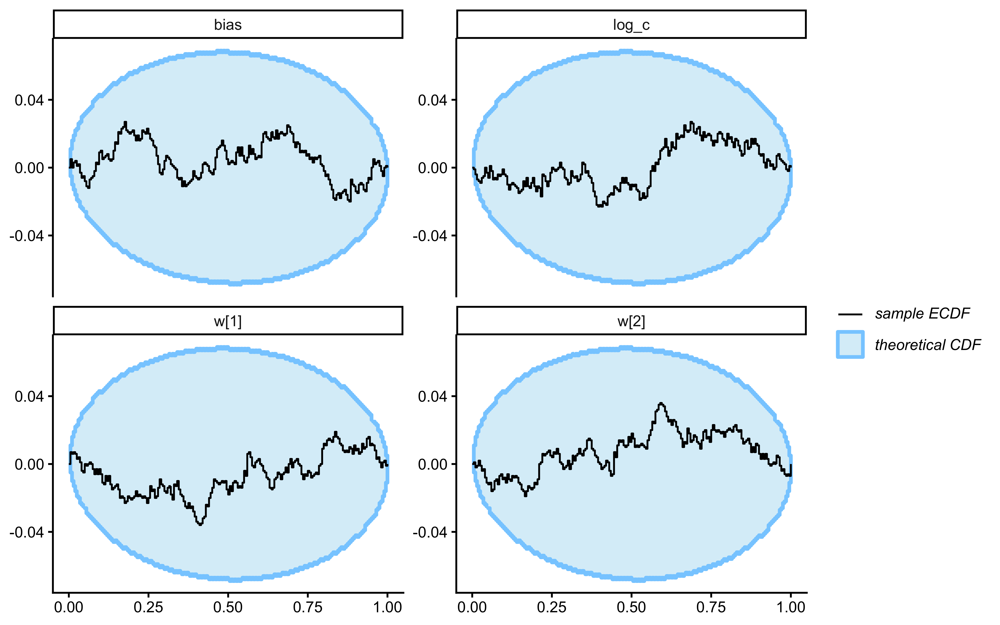
plot_rank_hist(sbc_results_single)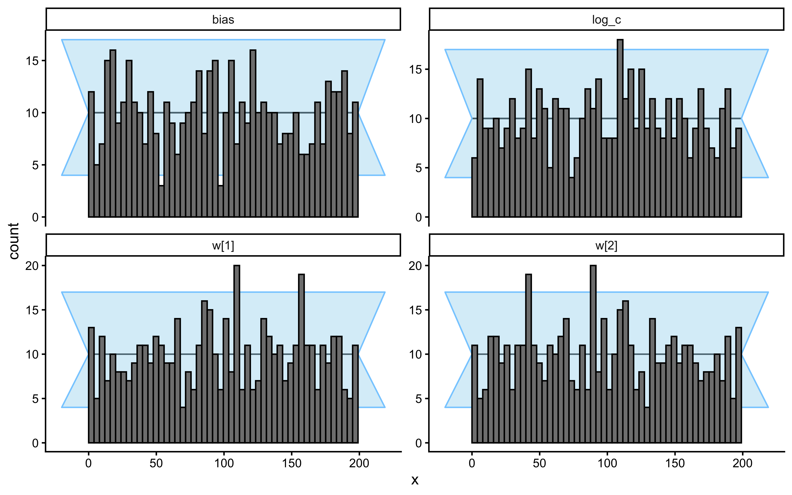
# ── Diagnostic issue investigation ───────────────────────────────────────────
backend_diags <- sbc_results_single$backend_diagnostics
default_diags <- sbc_results_single$default_diagnostics |>
dplyr::select(sim_id, max_rhat, min_ess_to_rank)
true_params_wide <- sbc_results_single$stats |>
dplyr::select(sim_id, variable, simulated_value) |>
tidyr::pivot_wider(names_from = variable, values_from = simulated_value)
diag_df <- backend_diags |>
dplyr::left_join(default_diags, by = "sim_id") |>
dplyr::left_join(true_params_wide, by = "sim_id") |>
dplyr::mutate(has_issue = n_divergent > 0 | n_max_treedepth > 0 | max_rhat > 1.01)
p_diag_c_bias <- ggplot(diag_df, aes(x = log_c, y = bias, color = has_issue)) +
geom_point(alpha = 0.7, size = 2) +
scale_color_manual(values = c("FALSE" = "#0072B2", "TRUE" = "#D55E00")) +
labs(title = "Diagnostic Issues in Parameter Space",
subtitle = "Orange points: divergence, max treedepth, or Rhat > 1.01",
x = "True log(c)", y = "True Bias") +
theme(legend.position = "bottom")
p_diag_w_c <- ggplot(diag_df, aes(x = `w[1]`, y = log_c, color = has_issue)) +
geom_point(alpha = 0.7, size = 2) +
scale_color_manual(values = c("FALSE" = "#0072B2", "TRUE" = "#D55E00")) +
labs(title = "Attention vs Sensitivity", x = "True w[1]", y = "True log(c)") +
theme(legend.position = "none")
print(p_diag_c_bias | p_diag_w_c)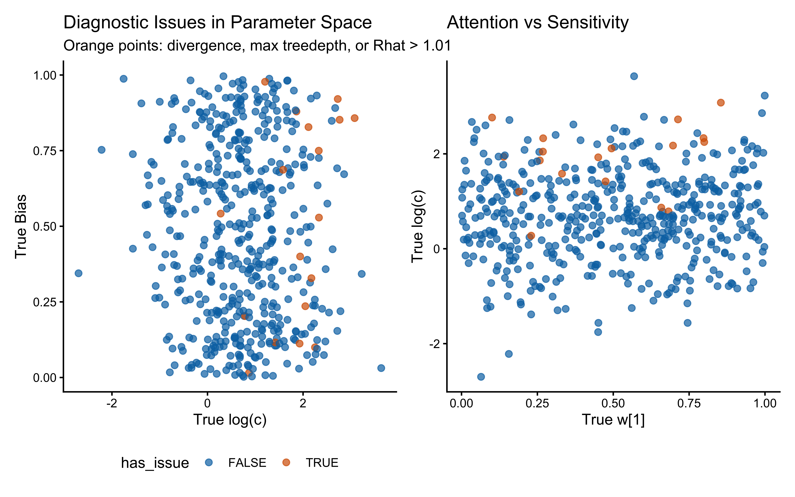
# ── Parameter recovery on SBC simulations ────────────────────────────────────
recovery_df <- sbc_results_single$stats
p_sbc_recovery <- ggplot(recovery_df, aes(x = simulated_value, y = mean)) +
geom_point(alpha = 0.4, color = "#0072B2") +
geom_abline(intercept = 0, slope = 1, color = "red", linetype = "dashed") +
facet_wrap(~variable, scales = "free") +
labs(
title = "Parameter Recovery Across SBC Simulations",
subtitle = "Posterior mean vs True generated value",
x = "True Value (simulated_value)",
y = "Estimated Value (Posterior Mean)"
) +
theme_bw()
print(p_sbc_recovery)
When the true log(c) is above 0 the model computes similarity using exponential decay: exp(-c * distance). When c gets large, similarity drops to exactly zero for anything except perfectly identical stimuli, causing gradient collapse and HMC failures. The diagnostic scatter plots above reveal that divergences and Rhat violations cluster at high log(c) values, confirming that the prior mass above log(c) ≈ 2 (c ≈ 7–8) is unsupported by the sampler geometry.
However, calibration and parameter recovery look otherwise good.
Practical constraint from SBC. We treat c ≈ 10 as a hard ceiling: a sensitivity this extreme makes stimuli that differ by any measurable amount effectively identical, which is psychologically implausible for the feature ranges used here. We therefore require that the prior places negligible mass above c = 10, i.e., that the 99.85th percentile (mean + 3 SD on the log scale) stays below log(10) ≈ 2.30.
# Tighten the sensitivity prior for the rest of the chapter based on SBC results
LOG_C_PRIOR_SD <- 0.5For the single-subject model this is satisfied with Normal(log(2), 0.5), whose +3 SD upper bound is exp(0.69 + 1.5) ≈ 8.9 — well within the boundary of acceptability.
The canonical GCM weights every stored exemplar equally — a perfect, unbounded memory. That is pedagogically clean but psychologically implausible. Indeed, many early experiments had participants being extensively trained on a set of stimuli, repeated many times, before they actually got tested, so that they would resemble better the model’s assumptions. Further, an unbounded memory becomes a real liability as soon as the learning environment is non-stationary: if the category structure changes halfway through the task, the unweighted sum of exemplars anchors the agent to contradictions it has no mechanism to discard. We add a single forgetting-rate parameter, \(\lambda\), that downweights older exemplars by \(e^{-\lambda (t - t_e)}\) before entering the similarity average:
\[\eta_{ie} = e^{-\lambda (i - t_e)} \cdot e^{-c\, d_{ie}}, \qquad m_{k,i} = \frac{\sum_{e \in C_k} \eta_{ie}}{\sum_{e \in C_k} e^{-\lambda(i - t_e)}}, \qquad p_{i} = \frac{\beta \cdot m_{1,i}}{\beta \cdot m_{1,i} + (1 - \beta) \cdot m_{0,i}}.\]
The parameter \(\lambda\) governs the Temporal Decay term: \(e^{-\lambda (i - t_e)}\).
The “Memory Window”. Think of \(\lambda\) as controlling the size of the agent’s moving window of attention.
Effective Sample Size. The denominator in the \(m_{k,i}\) formula, \(\sum_{e \in C_k} e^{-\lambda(i - t_e)}\), is the decay-weighted effective sample size. Instead of just counting how many items are in Category \(k\) (which would be the raw count \(|C_k|\)), the model counts how many “fresh” items are in Category \(k\). If a category has 100 exemplars but they were all seen 500 trials ago, and \(\lambda\) is high, the “effective count” for that category will be near zero. This prevents old, potentially obsolete evidence from dominating the decision.
Why use it? \(\lambda\) is essential for non-stationary environments. If the rules of the task change (e.g., the category boundary shifts), an agent with \(\lambda=0\) will be stuck trying to reconcile new evidence with a massive mountain of old, contradictory evidence. An agent with a well-tuned \(\lambda\) can “forget” the old rules and adapt to the new ones by letting the old evidence fade away.
All three categorization chapters (13–15) test their non-stationarity extensions against the same three scenarios: Static, Abrupt Shifts, and Smooth Drift. The ordering reflects an increasing assumption match between the environment and the models. This consistency allows us to compare how different architectures (exemplars, prototypes, rules) respond to the same challenges. The final synthesis is at the end of Chapter 17.
We will test the decay-extended GCM against these scenarios, which provide varying degrees of parameter identifiability:
| Scenario | World Dynamics | GCM Match | Identifiability |
|---|---|---|---|
| Static | None | Perfect at \(\lambda=0\) | Low: Non-identified with \(c\) |
| Abrupt Shift | Reversals | Misspecified | High: Signal from recovery speed |
| Smooth Drift | Gaussian | Matched | Moderate: Signal from boundary tracking |
An important subtlety emerges: assumption match and parameter identifiability do not always align. The contingent-shift scenario is more misspecified than smooth drift, yet it produces a cleaner \(\lambda\) recovery because abrupt reversals impose sharp temporal constraints that only \(\lambda\) can explain. The drift scenario recovers \(\lambda\) at the correct calibration rate but without the “bonus” identifiability that misspecification accidentally provides.
# Prior hyperparameters for log(lambda).
# Normal(-2, 1) gives median lambda ≈ 0.135 (half-life ≈ 5 trials).
# ±2 SD covers lambda ∈ (0.018, 1.0), spanning "effectively no decay"
# to "only the last trial or two matters".
LOG_LAMBDA_PRIOR_MEAN <- -2.0
LOG_LAMBDA_PRIOR_SD <- 1.0The simulator loops over trials, computes the decay-weighted choice probability, draws a response, and determines the observed feedback according to the scenario. Memory stores the trial index at which each exemplar was encoded, so ages are exact at every step. For the contingent-shift scenario, the label-flip state machine updates after the response is drawn (so the current trial’s feedback uses the label map that was in force at decision time).
simulate_decay_scenario <- function(w, c, lambda, bias, schedule,
scenario = c("static", "contingent_shift", "drift"),
streak_target = 8,
drift_traj = NULL) {
scenario <- match.arg(scenario)
ntrials <- nrow(schedule)
obs_mat <- as.matrix(schedule[, c("height", "position")])
base_lab <- schedule$category_feedback
memory_obs <- matrix(NA_real_, nrow = 0, ncol = 2)
memory_cat <- integer(0)
memory_trial <- integer(0)
label_flip <- FALSE
streak <- 0L
prob_cat1 <- numeric(ntrials)
sim_response <- integer(ntrials)
observed_feedback <- integer(ntrials)
label_flip_trace <- logical(ntrials)
for (i in seq_len(ntrials)) {
current_stim <- as.numeric(obs_mat[i, ])
n_mem <- nrow(memory_obs)
# ── Decay-weighted *mean* similarity per category ───────────────────
# Numerator: Σ (decay_j · similarity_j) over exemplars in that category.
# Denominator: Σ decay_j over exemplars in that category (effective N).
# Collapses to plain mean similarity when lambda = 0.
if (n_mem == 0 || !any(memory_cat == 0) || !any(memory_cat == 1)) {
p <- bias
} else {
d <- as.numeric(abs(sweep(memory_obs, 2, current_stim, "-")) %*% w)
age <- i - memory_trial
decay <- exp(-lambda * age)
sim <- exp(-c * d)
wt <- decay * sim
s1 <- sum(wt[memory_cat == 1]); s0 <- sum(wt[memory_cat == 0])
w1 <- sum(decay[memory_cat == 1]); w0 <- sum(decay[memory_cat == 0])
m1 <- if (w1 > 1e-12) s1 / w1 else 0
m0 <- if (w0 > 1e-12) s0 / w0 else 0
num <- bias * m1
den <- num + (1 - bias) * m0
p <- if (den > 1e-12) num / den else bias
}
p <- pmax(1e-9, pmin(1 - 1e-9, p))
prob_cat1[i] <- p
sim_response[i] <- rbinom(1, 1, p)
# ── Observed feedback depends on the scenario ───────────────────────
fb <- switch(scenario,
static = base_lab[i],
contingent_shift = if (label_flip) 1L - base_lab[i] else base_lab[i],
drift = {
d0 <- sum(abs(current_stim - drift_traj$mu0[i, ]))
d1 <- sum(abs(current_stim - drift_traj$mu1[i, ]))
as.integer(d1 < d0)
}
)
observed_feedback[i] <- fb
label_flip_trace[i] <- label_flip
# Update the streak/flip state for the contingent scenario
if (scenario == "contingent_shift") {
streak <- if (sim_response[i] == fb) streak + 1L else 0L
if (streak >= streak_target) { label_flip <- !label_flip; streak <- 0L }
}
# Add the current trial to memory
memory_obs <- rbind(memory_obs, current_stim)
memory_cat <- c(memory_cat, fb)
memory_trial <- c(memory_trial, i)
}
schedule |>
mutate(
prob_cat1 = prob_cat1,
sim_response = sim_response,
observed_feedback = observed_feedback,
label_flip = label_flip_trace,
correct = as.integer(sim_response == observed_feedback)
)
}The smooth-drift scenario needs a pre-computed trajectory of category centres. Each centre follows an independent bivariate Gaussian random walk with per-trial step SD drift_sigma. Defaults place the initial centres at the John K. Kruschke (1993) category means; drift_sigma = 0.05 gives a cumulative SD of about 0.4 units over 64 trials — enough to migrate the boundary through roughly one stimulus cell.
make_drift_trajectory <- function(ntrials, drift_sigma = 0.05, seed = 1) {
set.seed(seed)
mu0_init <- c(1.75, 3.25) # Kruschke cat-0 mean (height, position)
mu1_init <- c(3.25, 1.75) # Kruschke cat-1 mean
d0 <- apply(matrix(rnorm(ntrials * 2, 0, drift_sigma), ncol = 2), 2, cumsum)
d1 <- apply(matrix(rnorm(ntrials * 2, 0, drift_sigma), ncol = 2), 2, cumsum)
list(
mu0 = sweep(d0, 2, mu0_init, "+"),
mu1 = sweep(d1, 2, mu1_init, "+")
)
}The “Ground Truth” is a Random Walk The function make_drift_trajectory creates two paths (\(mu_0\) and \(mu_1\)).
Initial State: On Trial 1, the categories start at the standard Kruschke positions (e.g., Cat 0 is at top-left, Cat 1 is at bottom-right).
The Drift: Every single trial, both centers take a small random step in a random direction (North, South, East, or West). Because of the cumsum() (cumulative sum), these small steps add up.
The Result: By Trial 64, the centers might have wandered quite far from where they started. The “boundary” between the categories—the line where you are equally likely to call something Cat 0 or Cat 1—is constantly shifting.
How Exemplars are Generated When the simulation runs, it uses these drifting centers to create the stimuli the agent actually sees:
On Trial \(t\), the computer decides to show a “Category 0” stimulus.
It looks up the current coordinates of the center: \(mu_{0,t}\).
It generates a stimulus near that point (usually by adding a bit of noise).
The agent sees this stimulus and is told: “This is a Category 0.”
simulate_decay_agent <- function(agent_id, scenario, w, c, lambda, bias,
subject_seed, streak_target = 8,
drift_sigma = 0.05) {
schedule <- make_subject_schedule(stimulus_info, n_blocks, seed = subject_seed)
drift_tr <- if (scenario == "drift")
make_drift_trajectory(nrow(schedule), drift_sigma, seed = subject_seed)
else NULL
out <- simulate_decay_scenario(
w = w, c = c, lambda = lambda, bias = bias,
schedule = schedule,
scenario = scenario,
streak_target = streak_target,
drift_traj = drift_tr
)
out |>
mutate(
agent_id = agent_id,
scenario = scenario,
w1_true = w[1],
c_true = c,
lambda_true = lambda,
log_c_true = log(c),
log_lambda_true = log(lambda),
bias_true = bias
) |>
group_by(agent_id) |>
mutate(cumulative_accuracy = cumsum(correct) / row_number()) |>
ungroup()
}We simulate 10 agents per cell of a grid that crosses three \(\lambda\) values with the three scenarios and plot cumulative accuracy. Static data is where low \(\lambda\) wins. The contingent-shift data is where moderate-to-high \(\lambda\) wins (faster forgetting speeds reversal recovery, even though the model is misspecified for abrupt shifts). The drift data rewards moderate \(\lambda\) tuned to the drift rate — agents that forget too slowly are anchored by obsolete exemplars; agents that forget too fast discard still-valid recent evidence.
decay_viz_file <- here("simdata", "ch12_decay_scenario_viz.csv")
if (regenerate_simulations || !file.exists(decay_viz_file)) {
viz_grid <- expand_grid(
scenario = c("static", "contingent_shift", "drift"),
lambda_true = c(0.02, 0.2, 0.6),
agent_id = 1:10
) |>
mutate(subject_seed = 10000 + row_number())
viz_sim <- pmap_dfr(
list(agent_id = viz_grid$agent_id,
scenario = viz_grid$scenario,
lambda = viz_grid$lambda_true,
subject_seed = viz_grid$subject_seed),
function(agent_id, scenario, lambda, subject_seed) {
simulate_decay_agent(
agent_id = agent_id,
scenario = scenario,
w = c(0.5, 0.5),
c = 2.0,
lambda = lambda,
bias = 0.5,
subject_seed = subject_seed
)
}
)
write_csv(viz_sim, decay_viz_file)
} else {
viz_sim <- read_csv(decay_viz_file, show_col_types = FALSE)
}
ggplot(viz_sim |>
mutate(scenario = factor(scenario,
levels = c("static", "contingent_shift", "drift"),
labels = c("Static Kruschke", "Performance-contingent flips", "Smooth drift"))),
aes(x = trial_within_subject, y = cumulative_accuracy,
color = factor(lambda_true), group = interaction(agent_id, lambda_true))) +
stat_summary(fun = mean, geom = "line",
aes(group = factor(lambda_true)), linewidth = 1.1) +
stat_summary(fun.data = mean_se, geom = "ribbon", alpha = 0.15,
aes(fill = factor(lambda_true), group = factor(lambda_true)),
color = NA) +
facet_wrap(~scenario, ncol = 3) +
scale_color_viridis_d(option = "plasma", name = expression(lambda)) +
scale_fill_viridis_d(option = "plasma", name = expression(lambda)) +
geom_hline(yintercept = 0.5, linetype = "dashed", color = "grey50") +
labs(
title = "Learning Curves Across the Three Scenarios",
subtitle = paste0("Mean ± SE across 10 agents per cell; c = 2, bias = 0.5, ",
"uniform attention"),
x = "Trial", y = "Cumulative accuracy"
) +
theme(legend.position = "bottom")
Reading the scenario panels.
The Alignment Critique. To see the true effect of \(\lambda\) on cognitive flexibility, we must align the data to the moment of the shift. In non-stationary environments, averaging across absolute trial numbers often masks the very process we are interested in—the speed of adaptation.
# Align contingent-shift data to the start of each new phase
reversal_viz <- viz_sim |>
filter(scenario == "contingent_shift") |>
group_by(agent_id, lambda_true) |>
mutate(
# Detect when the label mapping flipped
shift_event = label_flip != lag(label_flip, default = first(label_flip)),
phase_id = cumsum(shift_event)
) |>
group_by(agent_id, lambda_true, phase_id) |>
mutate(
trial_in_phase = row_number(),
phase_accuracy = cumsum(correct) / trial_in_phase
) |>
ungroup() |>
# Focus on the first few reversals to see the learning dynamics
filter(phase_id > 0, phase_id <= 4, trial_in_phase <= 40)
ggplot(reversal_viz, aes(x = trial_in_phase, y = phase_accuracy,
color = factor(lambda_true), group = factor(lambda_true))) +
stat_summary(fun = mean, geom = "line", linewidth = 1.2) +
stat_summary(fun.data = mean_se, geom = "ribbon", alpha = 0.1, color = NA) +
facet_wrap(~paste("Phase", phase_id), ncol = 4) +
scale_color_viridis_d(option = "plasma", name = expression(lambda)) +
geom_hline(yintercept = 0.5, linetype = "dashed", color = "grey50") +
labs(
title = "Learning Performance Aligned to Category Shifts",
subtitle = "Cumulative accuracy reset at each reversal; contingent-shift scenario only",
x = "Trials Since Shift", y = "Cumulative Phase Accuracy"
) +
theme(legend.position = "bottom")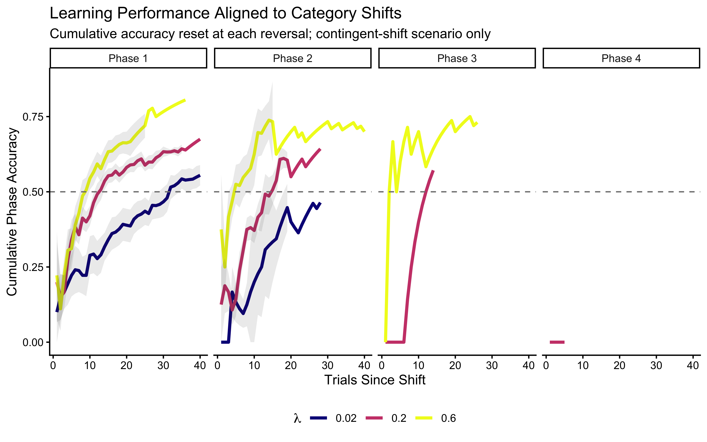
When aligned this way, the “recovery advantage” of high \(\lambda\) becomes stark. While all agents collapse to chance (or below) immediately after a shift, agents with higher decay rates (\(\lambda = 0.6\)) shed their obsolete memory faster and return to high accuracy significantly earlier than those with low decay.
The Stan implementation adds log_lambda as an unconstrained scalar parameter and multiplies the similarity term by the decay weight exp(-lambda * age) where age = i - past_trial_idx. We also use a decay-weighted mean similarity to ensure that the relative evidence for each category is properly scaled as old exemplars fade.
gcm_decay_single_stan <- "
// Generalized Context Model with Memory Decay — Single Subject
data {
int<lower=1> N_total;
int<lower=1> N_features;
array[N_total] int<lower=0, upper=1> y;
array[N_total, N_features] real obs;
array[N_total] int<lower=0, upper=1> cat_feedback;
vector[N_features] prior_w_alpha;
real prior_log_c_mu;
real<lower=0> prior_log_c_sigma;
real prior_log_lambda_mu;
real<lower=0> prior_log_lambda_sigma;
real<lower=0> prior_bias_alpha;
real<lower=0> prior_bias_beta;
int<lower=0, upper=1> run_diagnostics;
}
transformed data {
array[N_total, N_total, N_features] real abs_diff;
for (i in 1:N_total) {
for (j in 1:N_total) {
for (f in 1:N_features) {
abs_diff[i, j, f] = abs(obs[i, f] - obs[j, f]);
}
}
}
}
parameters {
simplex[N_features] w;
real log_c;
real log_lambda;
real<lower=0, upper=1> bias;
}
transformed parameters {
real<lower=0> c = exp(log_c);
real<lower=0> lambda = exp(log_lambda);
vector<lower=1e-9, upper=1-1e-9>[N_total] prob_cat1;
{
array[N_total] int memory_trial_idx;
array[N_total] int memory_cat;
int n_mem = 0;
for (i in 1:N_total) {
real p_i;
int has_cat0 = 0;
int has_cat1 = 0;
for (k in 1:n_mem) {
if (memory_cat[k] == 0) has_cat0 = 1;
if (memory_cat[k] == 1) has_cat1 = 1;
}
if (n_mem == 0 || has_cat0 == 0 || has_cat1 == 0) {
p_i = bias;
} else {
real s0 = 0.0; // sum of decay * similarity for cat 0
real s1 = 0.0; // sum of decay * similarity for cat 1
real w0 = 0.0; // sum of decay weights for cat 0 (effective N)
real w1 = 0.0; // sum of decay weights for cat 1 (effective N)
for (e in 1:n_mem) {
real d = 0.0;
int past_i = memory_trial_idx[e];
for (f in 1:N_features)
d += w[f] * abs_diff[i, past_i, f];
real age = i - past_i;
real decay_weight = exp(-lambda * age);
real sim = exp(-c * d);
real weight = decay_weight * sim;
if (memory_cat[e] == 1) { s1 += weight; w1 += decay_weight; }
else { s0 += weight; w0 += decay_weight; }
}
real m1 = (w1 > 1e-12) ? s1 / w1 : 0.0;
real m0 = (w0 > 1e-12) ? s0 / w0 : 0.0;
real num = bias * m1;
real den = num + (1.0 - bias) * m0;
p_i = (den > 1e-12) ? num / den : bias;
}
prob_cat1[i] = fmax(1e-9, fmin(1.0 - 1e-9, p_i));
n_mem += 1;
memory_trial_idx[n_mem] = i;
memory_cat[n_mem] = cat_feedback[i];
}
}
}
model {
target += dirichlet_lpdf(w | prior_w_alpha);
target += normal_lpdf(log_c | prior_log_c_mu, prior_log_c_sigma);
target += normal_lpdf(log_lambda | prior_log_lambda_mu, prior_log_lambda_sigma);
target += beta_lpdf(bias | prior_bias_alpha, prior_bias_beta);
target += bernoulli_lpmf(y | prob_cat1);
}
generated quantities {
vector[N_total] log_lik;
real lprior;
if (run_diagnostics) {
for (i in 1:N_total)
log_lik[i] = bernoulli_lpmf(y[i] | prob_cat1[i]);
}
lprior =
dirichlet_lpdf(w | prior_w_alpha) +
normal_lpdf(log_c | prior_log_c_mu, prior_log_c_sigma) +
normal_lpdf(log_lambda | prior_log_lambda_mu, prior_log_lambda_sigma) +
beta_lpdf(bias | prior_bias_alpha, prior_bias_beta);
}
"
stan_file_gcm_decay_single <- "stan/ch12_gcm_decay_single.stan"
write_stan_file(gcm_decay_single_stan, dir = "stan/", basename = "ch12_gcm_decay_single.stan")[1] "/Users/au209589/Dropbox/Teaching/AdvancedCognitiveModeling23_book/stan/ch12_gcm_decay_single.stan"mod_gcm_decay_single <- cmdstan_model(stan_file_gcm_decay_single)We pick one representative agent per scenario with \(\lambda = 0.2\), \(c = 2\), bias \(= 0.5\), and uniform attention, and fit the decay GCM to each.
decay_fit_file <- here("simmodels", "ch12_gcm_decay_single_fits.rds")
decay_single_fit_data <- list(
static = simulate_decay_agent(1, "static",
w = c(0.5, 0.5), c = 2.0,
lambda = 0.2, bias = 0.5,
subject_seed = 20001),
contingent_shift = simulate_decay_agent(1, "contingent_shift",
w = c(0.5, 0.5), c = 2.0,
lambda = 0.2, bias = 0.5,
subject_seed = 20003),
drift = simulate_decay_agent(1, "drift",
w = c(0.5, 0.5), c = 2.0,
lambda = 0.2, bias = 0.5,
subject_seed = 20002)
)
stan_data_from_agent <- function(agent_df) {
list(
N_total = nrow(agent_df),
N_features = 2L,
y = as.integer(agent_df$sim_response),
obs = as.matrix(agent_df[, c("height", "position")]),
cat_feedback = as.integer(agent_df$observed_feedback),
prior_w_alpha = c(1, 1),
prior_log_c_mu = LOG_C_PRIOR_MEAN,
prior_log_c_sigma = LOG_C_PRIOR_SD,
prior_log_lambda_mu = LOG_LAMBDA_PRIOR_MEAN,
prior_log_lambda_sigma = LOG_LAMBDA_PRIOR_SD,
prior_bias_alpha = 1,
prior_bias_beta = 1,
run_diagnostics = 1
)
}
if (regenerate_simulations || !file.exists(decay_fit_file)) {
decay_fits <- purrr::imap(decay_single_fit_data, function(agent_df, scen) {
dat <- stan_data_from_agent(agent_df)
pf <- tryCatch(
mod_gcm_decay_single$pathfinder(data = dat, num_paths = 4,
refresh = 0, seed = 500),
error = function(e) NULL
)
fit <- mod_gcm_decay_single$sample(
data = dat,
init = if (!is.null(pf)) pf else 0.5,
seed = 500,
chains = 4,
parallel_chains = min(4, availableCores()),
iter_warmup = 1000,
iter_sampling = 1500,
refresh = 0,
adapt_delta = 0.9
)
fit$save_object(here("simmodels",
paste0("ch12_gcm_decay_single_", scen, ".rds")))
fit
})
saveRDS(lapply(decay_fits, function(f) f$output_files()), decay_fit_file)
cat("Decay GCM fits computed and saved.\n")
} else {
decay_fits <- setNames(
lapply(names(decay_single_fit_data), function(scen) {
readRDS(here("simmodels",
paste0("ch12_gcm_decay_single_", scen, ".rds")))
}),
names(decay_single_fit_data)
)
cat("Loaded existing decay GCM fits.\n")
}Loaded existing decay GCM fits.decay_diag_tbls <- purrr::imap_dfr(decay_fits, function(fit, scen) {
tbl <- diagnostic_summary_table(
fit,
params = c("w[1]", "log_c", "log_lambda", "bias")
)
tbl |> mutate(scenario = scen)
})
print(decay_diag_tbls |>
dplyr::select(scenario, metric, value, threshold, pass))# A tibble: 18 × 5
scenario metric value threshold pass
<chr> <chr> <dbl> <chr> <lgl>
1 static Divergences (zero tolerance) 0 == 0 TRUE
2 static Max rank-normalised R-hat 1.00 < 1.01 TRUE
3 static Min bulk ESS 3855. > 400 TRUE
4 static Min tail ESS 3423. > 400 TRUE
5 static Min E-BFMI 0.978 > 0.2 TRUE
6 static Max MCSE / posterior SD 0.0161 < 0.05 TRUE
7 contingent_shift Divergences (zero tolerance) 0 == 0 TRUE
8 contingent_shift Max rank-normalised R-hat 1.00 < 1.01 TRUE
9 contingent_shift Min bulk ESS 4883. > 400 TRUE
10 contingent_shift Min tail ESS 3702. > 400 TRUE
11 contingent_shift Min E-BFMI 0.973 > 0.2 TRUE
12 contingent_shift Max MCSE / posterior SD 0.0147 < 0.05 TRUE
13 drift Divergences (zero tolerance) 0 == 0 TRUE
14 drift Max rank-normalised R-hat 1.00 < 1.01 TRUE
15 drift Min bulk ESS 4356. > 400 TRUE
16 drift Min tail ESS 3771. > 400 TRUE
17 drift Min E-BFMI 1.00 > 0.2 TRUE
18 drift Max MCSE / posterior SD 0.0156 < 0.05 TRUE walk(names(decay_fits), function(scen) {
cat("=== Pair plot:", scen, "===\n")
print(bayesplot::mcmc_pairs(
decay_fits[[scen]]$draws(c("log_c", "log_lambda", "w[1]", "bias")),
diag_fun = "dens",
off_diag_fun = "hex"
))
})=== Pair plot: static ===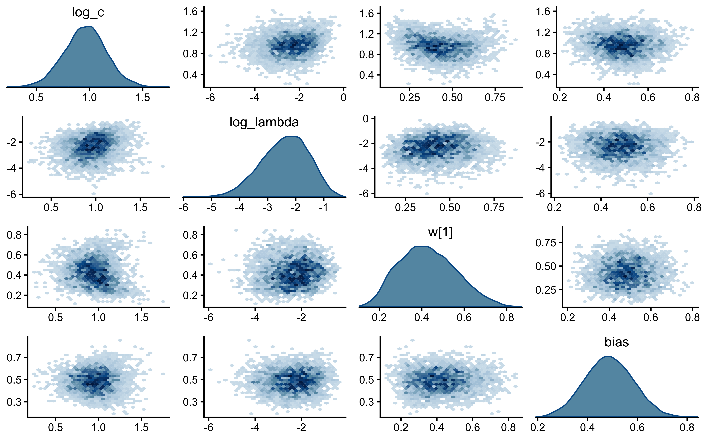
=== Pair plot: contingent_shift ===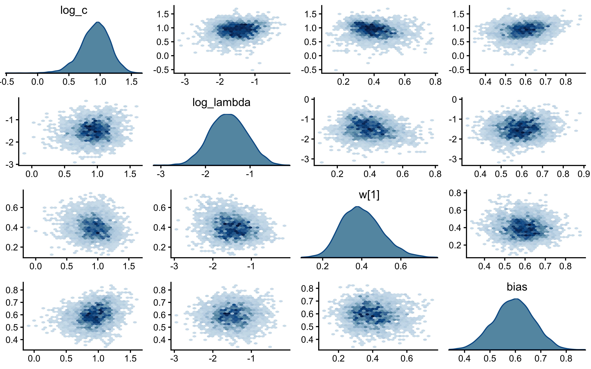
=== Pair plot: drift ===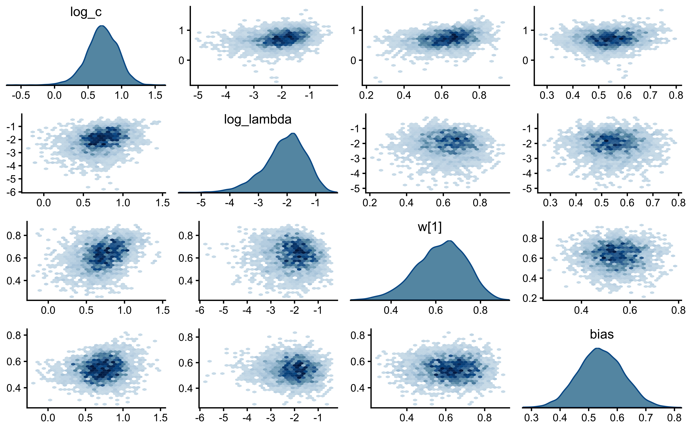
What to watch for in the pair plot. Theoretically, we might expect a log_c/log_lambda ridge on static data—since both parameters narrow the effective similarity kernel, they could under-constrain each other. However, we do not observe such a ridge in the plots below. The posterior for \(\lambda\) is strongly pulled toward the left tail (effectively zero decay), while \(c\) is identified by the spatial structure of the Kruschke task, keeping the two parameters distinct. On contingent-shift and drift data, the temporal signal further separates them: \(\lambda\) is forced to account for the rate of environment change, while \(c\) remains anchored to the perceptual discriminability of the stimuli.
decay_pp_df <- purrr::imap_dfr(decay_fits, function(fit, scen) {
d <- as_draws_df(fit$draws(c("log_c", "log_lambda", "w[1]", "bias")))
bind_rows(
tibble(scenario = scen, parameter = "log_c", value = d$log_c, source = "posterior"),
tibble(scenario = scen, parameter = "log_lambda", value = d$log_lambda, source = "posterior"),
tibble(scenario = scen, parameter = "w[1]", value = d$`w[1]`, source = "posterior"),
tibble(scenario = scen, parameter = "bias", value = d$bias, source = "posterior")
)
})
set.seed(11)
n_prior <- 4000
prior_ref <- bind_rows(
tibble(parameter = "log_c", value = rnorm(n_prior, LOG_C_PRIOR_MEAN, LOG_C_PRIOR_SD),
source = "prior"),
tibble(parameter = "log_lambda", value = rnorm(n_prior, LOG_LAMBDA_PRIOR_MEAN, LOG_LAMBDA_PRIOR_SD),
source = "prior"),
tibble(parameter = "w[1]", value = runif(n_prior), source = "prior"),
tibble(parameter = "bias", value = rbeta(n_prior, 1, 1), source = "prior")
) |>
tidyr::crossing(scenario = c("static", "contingent_shift", "drift"))
truth_lines <- tibble(
parameter = c("log_c", "log_lambda", "w[1]", "bias"),
value = c(log(2.0), log(0.2), 0.5, 0.5)
)
ggplot(bind_rows(prior_ref, decay_pp_df |>
mutate(scenario = factor(scenario, levels = c("static", "contingent_shift", "drift")))),
aes(x = value, fill = source, color = source)) +
geom_density(alpha = 0.4, linewidth = 0.5) +
geom_vline(data = truth_lines, aes(xintercept = value),
color = "red", linetype = "dashed") +
facet_grid(scenario ~ parameter, scales = "free") +
scale_fill_manual(values = c(prior = "grey70", posterior = "#009E73")) +
scale_color_manual(values = c(prior = "grey50", posterior = "#006D4E")) +
labs(
title = "Prior → Posterior Update: Decay GCM Across Scenarios",
subtitle = "Red dashed line = true generating value used for the single-agent fit",
x = NULL, y = "Density"
)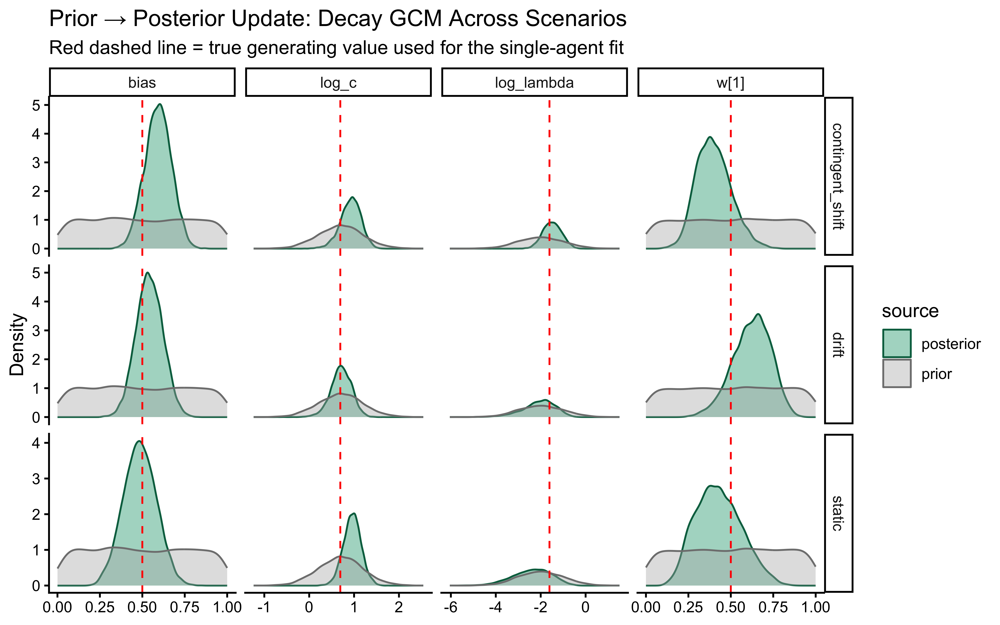
The prior-posterior update reveals a striking asymmetry: bias, log_c, and w[1] are well-identified — posteriors narrow sharply around the true generating value (red dashed line) across all three scenarios. log_lambda, the decay parameter, is the exception. Across all scenarios, the posterior barely updates from the prior, remaining flat and diffuse even as the other parameters recover cleanly. This is not a model failure but an identifiability constraint: a single agent’s trial sequence carries limited information about how quickly old exemplars lose influence, especially relative to how strongly the current exemplar is weighted (log_c) and which features matter (w[1]). This motivates the multilevel extension in the next section — partial pooling across participants might allow the group-level distribution to regularize individual decay estimates that the data alone cannot pin down.
We sweep a 3 × 3 grid of \((c, \lambda)\) truths, with 5 independent simulated datasets per cell per scenario (135 fits total), and report recovery scatters. We want to understand the issues at stake a bit better before running a full sbc.
decay_recovery_file <- here("simdata", "ch12_decay_recovery_results.rds")
run_decay_recovery_iter <- function(scenario, c_true, lambda_true, iteration) {
subject_seed <- iteration * 10000 +
round(c_true * 100) +
round(lambda_true * 1000) +
switch(scenario, static = 1, drift = 2, contingent_shift = 3)
agent_df <- simulate_decay_agent(
agent_id = iteration,
scenario = scenario,
w = c(0.5, 0.5),
c = c_true,
lambda = lambda_true,
bias = 0.5,
subject_seed = subject_seed
)
dat <- stan_data_from_agent(agent_df)
pf <- tryCatch(
mod_gcm_decay_single$pathfinder(data = dat, num_paths = 4,
refresh = 0, seed = subject_seed),
error = function(e) NULL
)
fit <- tryCatch(
mod_gcm_decay_single$sample(
data = dat,
init = if (!is.null(pf)) pf else 0.5,
seed = subject_seed,
chains = 2,
parallel_chains = 2,
iter_warmup = 800,
iter_sampling = 1000,
refresh = 0,
adapt_delta = 0.9
),
error = function(e) { message("Fit error: ", e$message); NULL }
)
if (is.null(fit)) return(NULL)
s <- fit$summary(variables = c("log_c", "log_lambda", "c", "lambda"))
diag <- fit$diagnostic_summary(quiet = TRUE)
tibble(
scenario = scenario,
c_true = c_true,
lambda_true = lambda_true,
iteration = iteration,
log_c_mean = s$mean[s$variable == "log_c"],
log_lambda_mean = s$mean[s$variable == "log_lambda"],
c_mean = s$mean[s$variable == "c"],
lambda_mean = s$mean[s$variable == "lambda"],
log_c_q5 = s$q5[s$variable == "log_c"],
log_c_q95 = s$q95[s$variable == "log_c"],
log_lambda_q5 = s$q5[s$variable == "log_lambda"],
log_lambda_q95 = s$q95[s$variable == "log_lambda"],
had_divergence = any(diag$num_divergent > 0)
)
}
if (regenerate_simulations || !file.exists(decay_recovery_file)) {
recovery_plan <- expand_grid(
scenario = c("static", "contingent_shift", "drift"),
c_true = c(0.5, 2.0, 5.0),
lambda_true = c(0.02, 0.2, 0.6),
iteration = 1:5
)
plan(multisession, workers = max(1, availableCores() - 1))
decay_recovery <- future_pmap_dfr(
list(
scenario = recovery_plan$scenario,
c_true = recovery_plan$c_true,
lambda_true = recovery_plan$lambda_true,
iteration = recovery_plan$iteration
),
run_decay_recovery_iter,
.options = furrr_options(seed = TRUE, scheduling = 1)
)
plan(sequential)
saveRDS(decay_recovery, decay_recovery_file)
cat("Decay recovery sweep complete.\n")
} else {
decay_recovery <- readRDS(decay_recovery_file)
cat("Loaded existing decay recovery sweep.\n")
}Loaded existing decay recovery sweep.decay_recovery_long <- decay_recovery |>
dplyr::select(scenario, c_true, lambda_true, iteration, had_divergence,
log_c_mean, log_lambda_mean) |>
pivot_longer(
cols = c(log_c_mean, log_lambda_mean),
names_to = "variable",
values_to = "estimated"
) |>
mutate(
parameter = if_else(variable == "log_c_mean", "log_c", "log_lambda"),
truth = if_else(parameter == "log_c", log(c_true), log(lambda_true)),
scenario = factor(scenario, levels = c("static", "contingent_shift", "drift"))
)
ggplot(decay_recovery_long, aes(x = truth, y = estimated, color = had_divergence)) +
geom_abline(intercept = 0, slope = 1, linetype = "dashed", color = "grey50") +
geom_point(alpha = 0.7, size = 2) +
facet_grid(parameter ~ scenario, scales = "free") +
scale_color_manual(values = c("FALSE" = "#0072B2", "TRUE" = "#D55E00"),
name = "Had divergence") +
labs(
title = "One-Shot Parameter Recovery for the Decay GCM",
subtitle = "Posterior mean vs true generating value; 5 iterations per (c, lambda) cell, 3 scenarios",
x = "True value (log scale)", y = "Estimated value (posterior mean)"
) +
theme(legend.position = "bottom")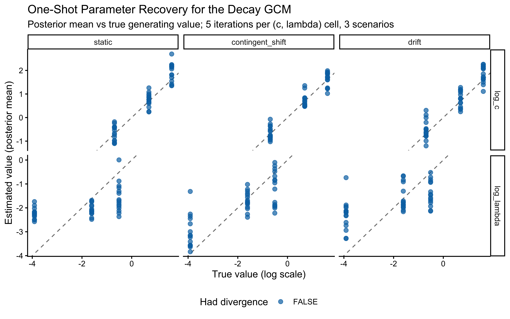
log_c recovers well across all three scenarios — points track the identity line with moderate scatter and no systematic bias, as expected from a well-identified parameter.
log_lambda tells a more nuanced story. In the static environment, estimates cluster near a single value (~−2) regardless of the true generating value, producing a flat horizontal band rather than a diagonal: the decay parameter is essentially unidentifiable. This is not surprising in retrospect — if category boundaries never shift, there is no information in the data about how quickly old exemplars should be discounted. All decay rates produce equally good predictions, so the posterior simply returns to the prior. Recovery seems a bit better in the contingent_shift and drift conditions: the lowest parameter values for lambda are also estimated as the lowest. When the environment changes, exemplar age starts to matter for prediction, and the data become informative about λ.
The key lesson here goes beyond “lambda is hard to estimate”: identifiability is not a fixed property of a parameter but a joint property of the parameter and the task structure. Fitting a decay model to data from a static environment will yield unreliable λ estimates no matter how many trials you collect — the right response is either to use a richer experimental design or to acknowledge the limitation explicitly when interpreting fitted decay rates
SBC is the calibration test proper: draw parameters from their priors, simulate data with those parameters, fit the model, and check that the posterior ranks of the true parameter are uniform. We run a separate SBC sweep for each scenario.
make_decay_sbc_generator <- function(scenario) {
SBC_generator_function(
function() {
log_c_true <- rnorm(1, LOG_C_PRIOR_MEAN, LOG_C_PRIOR_SD)
log_lambda_true <- rnorm(1, LOG_LAMBDA_PRIOR_MEAN, LOG_LAMBDA_PRIOR_SD)
c_true <- exp(log_c_true)
lambda_true <- exp(log_lambda_true)
w1_true <- runif(1)
bias_true <- rbeta(1, 1, 1)
subject_seed <- sample.int(1e8, 1)
agent_df <- simulate_decay_agent(
agent_id = 1,
scenario = scenario,
w = c(w1_true, 1 - w1_true),
c = c_true,
lambda = lambda_true,
bias = bias_true,
subject_seed = subject_seed
)
list(
variables = list(
log_c = log_c_true,
log_lambda = log_lambda_true,
`w[1]` = w1_true,
bias = bias_true
),
generated = stan_data_from_agent(agent_df)
)
}
)
}
run_decay_sbc <- function(scenario, n_sims = 200) {
cache_file <- here("simdata", paste0("ch12_decay_sbc_", scenario, ".rds"))
if (!regenerate_simulations && file.exists(cache_file)) {
cat("Loaded cached decay SBC for scenario:", scenario, "\n")
return(readRDS(cache_file))
}
gen <- make_decay_sbc_generator(scenario)
backend <- SBC_backend_cmdstan_sample(
mod_gcm_decay_single,
iter_warmup = 800,
iter_sampling = 1000,
chains = 2,
adapt_delta = 0.9,
refresh = 0
)
datasets <- generate_datasets(gen, n_sims = n_sims)
res <- compute_SBC(
datasets,
backend,
cache_mode = "results",
cache_location = here("simdata", paste0("ch12_decay_sbc_cache_", scenario)),
keep_fits = FALSE
)
saveRDS(res, cache_file)
res
}
decay_sbc_static <- run_decay_sbc("static", n_sims = 200)Loaded cached decay SBC for scenario: static decay_sbc_drift <- run_decay_sbc("drift", n_sims = 200)Loaded cached decay SBC for scenario: drift decay_sbc_shift <- run_decay_sbc("contingent_shift", n_sims = 200)Loaded cached decay SBC for scenario: contingent_shift print(plot_ecdf_diff(decay_sbc_static) + ggtitle("SBC: static"))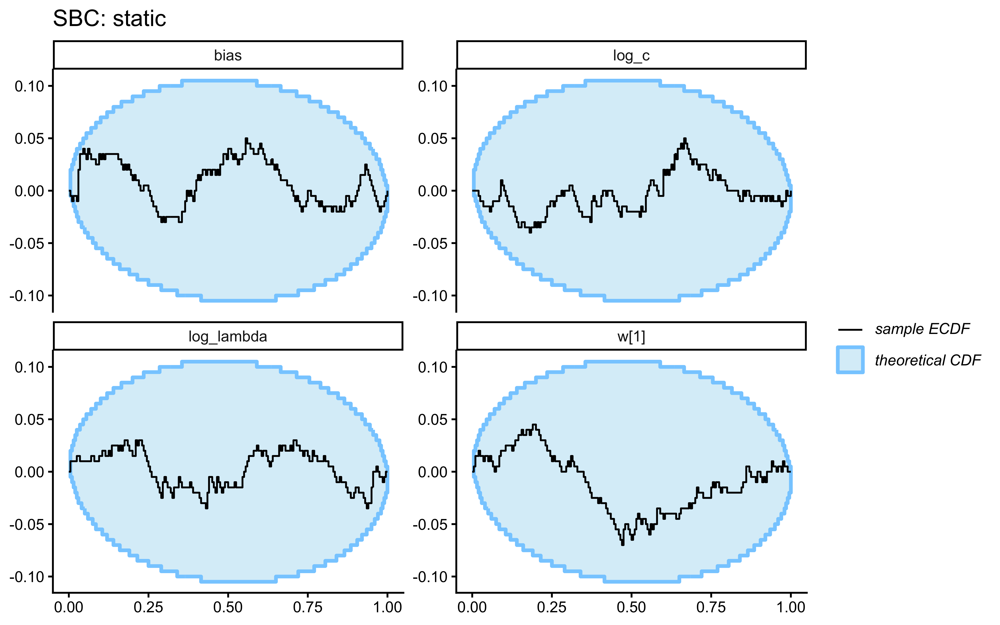
print(plot_ecdf_diff(decay_sbc_drift) + ggtitle("SBC: smooth drift"))
print(plot_ecdf_diff(decay_sbc_shift) + ggtitle("SBC: performance-contingent shifts"))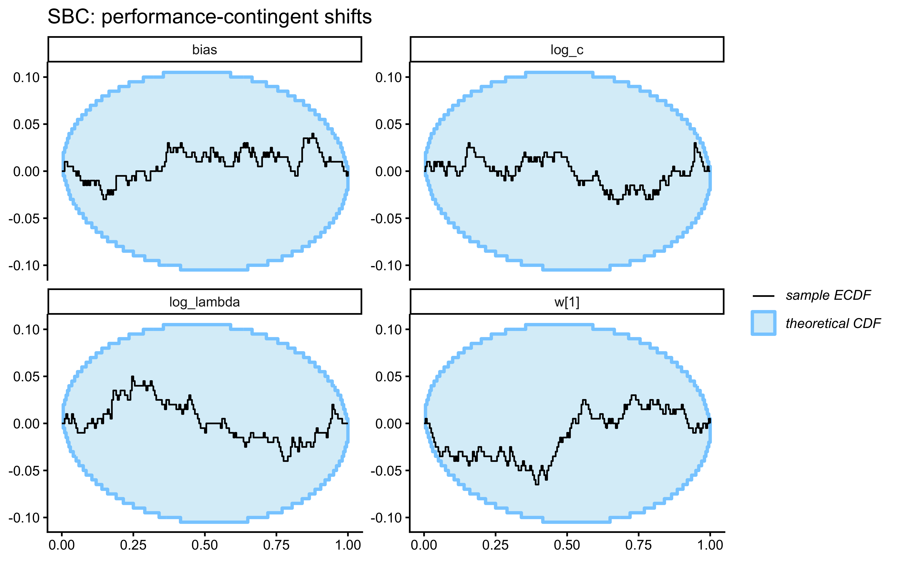
print(plot_rank_hist(decay_sbc_static) + ggtitle("Rank histograms — static"))
print(plot_rank_hist(decay_sbc_drift) + ggtitle("Rank histograms — drift"))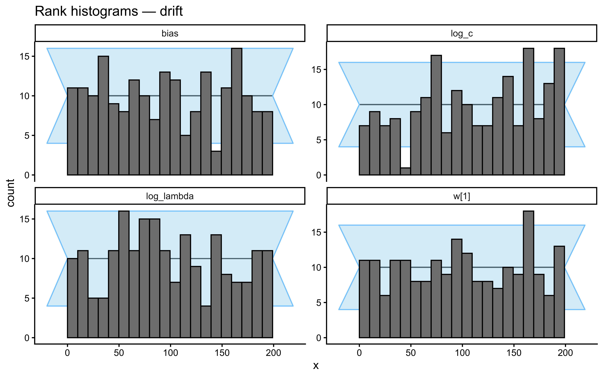
print(plot_rank_hist(decay_sbc_shift) + ggtitle("Rank histograms — contingent shifts"))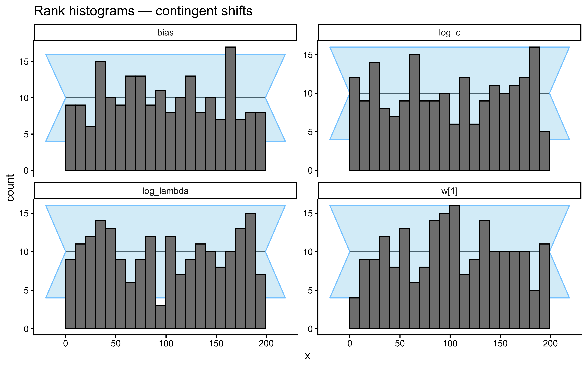
combine_sbc_stats <- function(sbc_obj, scenario) {
sbc_obj$stats |> mutate(scenario = scenario)
}
decay_sbc_stats <- bind_rows(
combine_sbc_stats(decay_sbc_static, "static"),
combine_sbc_stats(decay_sbc_drift, "drift"),
combine_sbc_stats(decay_sbc_shift, "contingent_shift")
) |>
dplyr::filter(variable %in% c("log_c", "log_lambda", "w[1]", "bias")) |>
mutate(scenario = factor(scenario, levels = c("static", "contingent_shift", "drift")))
ggplot(decay_sbc_stats, aes(x = simulated_value, y = mean)) +
geom_point(alpha = 0.35, color = "#0072B2") +
geom_abline(intercept = 0, slope = 1, color = "red", linetype = "dashed") +
facet_grid(variable ~ scenario, scales = "free") +
labs(
title = "SBC-Level Parameter Recovery: Decay GCM",
subtitle = "Posterior mean vs true generating value, pooled across SBC simulations",
x = "True value", y = "Posterior mean"
)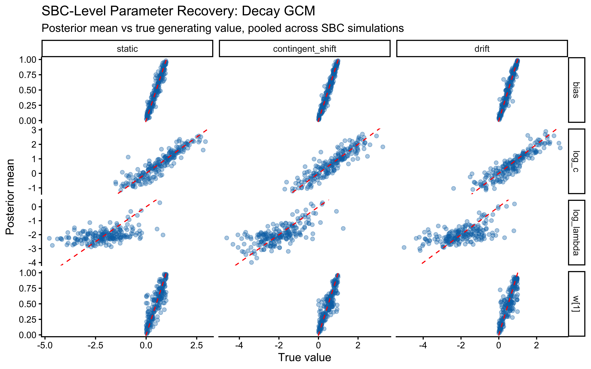
decay_sbc_stats |>
group_by(scenario, variable) |>
summarise(
sbc_mean_bias = mean(mean - simulated_value, na.rm = TRUE),
sbc_rmse = sqrt(mean((mean - simulated_value)^2, na.rm = TRUE)),
sbc_corr = cor(mean, simulated_value,
use = "complete.obs", method = "pearson"),
n_sims = dplyr::n(),
.groups = "drop"
) |>
print(n = Inf)# A tibble: 12 × 6
scenario variable sbc_mean_bias sbc_rmse sbc_corr n_sims
<fct> <chr> <dbl> <dbl> <dbl> <int>
1 static bias 0.00167 0.0835 0.957 200
2 static log_c -0.00810 0.394 0.912 200
3 static log_lambda 0.00307 0.893 0.463 200
4 static w[1] 0.00303 0.164 0.846 200
5 contingent_shift bias -0.000680 0.0650 0.973 200
6 contingent_shift log_c -0.00342 0.418 0.902 200
7 contingent_shift log_lambda 0.0122 0.726 0.687 200
8 contingent_shift w[1] -0.0125 0.146 0.868 200
9 drift bias 0.00223 0.0853 0.956 200
10 drift log_c -0.0830 0.427 0.909 200
11 drift log_lambda -0.00799 0.842 0.581 200
12 drift w[1] -0.0111 0.160 0.856 200Under static data, the log_lambda parameter cannot really be identified — the posterior does not contain the truth at the nominal rate because the data carry almost no information about forgetting. The log_c curve is well-behaved on the same data: the sensitivity parameter is identified regardless. Under contingent-shift and drift data, we start seeing some more recoverability (still not enough I’d say), with contingent-shift providing the sharpest \(\lambda\) constraint (abrupt reversals) and smooth drift providing the best-matched but less forceful identifiability.
The decay GCM’s parameter is always the same. Its identifiability is a joint property of the model and the task: when the task exercises forgetting — whether through a drifting boundary or through performance-contingent reversals — the model recovers \(\lambda\) cleanly; when it does not, \(\lambda\) is indistinguishable from a slightly wider similarity kernel.
A secondary observation emerges when we look closer at the calibration checks: while parameter recovery (the scatter plot) looks excellent for log_c across all scenarios, the SBC rank histograms reveal a subtle “worry” for log_c specifically in the drift scenario. This highlights a fundamental distinction in Bayesian validation:
Point Recovery (The “What”): This asks if the posterior mean is close to the truth. If your recovery plot is diagonal, your model is right “on average.”
Coverage Calibration (The “How Sure”): This asks if the posterior width (the uncertainty) is honest. If the model is 90% confident, is it actually right 90% of the time?
SBC is designed to catch the latter. In the drift scenario, the model is right about the value of log_c (good point recovery), but it is slightly overconfident: it underestimates its own uncertainty. One might wonder: since the model has \(\lambda\), why doesn’t the decay parameter just “map” the drift and leave \(c\) alone?
The answer lies in the Smeared Memory problem. Even with an optimal \(\lambda\), the agent doesn’t categorise based on only the single last trial; they need a “window” of recent exemplars to be effective. Because the boundary is drifting during that window, the exemplars in memory become spatially “smeared” — a location that was Category 0 five trials ago might be Category 1 now.
While \(\lambda\) can tell the model to trust recent trials more, it is a blunt temporal instrument. It cannot resolve the spatial conflict that arises when two different category labels occupy the same coordinates in the recent memory window. The model’s likelihood, having no parameter for “environmental volatility,” is forced to explain this residual friction using spatial sensitivity (\(c\)). It performs a form of attribution error, interpreting this temporal volatility as spatial overlap and settling on an overly precise estimate of \(c\). Because the model is using the wrong “tool” to explain the noise, it converges on a narrow posterior that doesn’t cover the true value as often as it should. If we only looked at the recovery plot, we would miss this overconfidence entirely. This is why SBC is the “gold standard” check: it ensures the model isn’t just accurate, but also appropriately humble about what it knows.
How the three scenarios match the model’s assumptions. The decay GCM assumes exemplars decay exponentially as a function of trial age, with no separate mechanism for abrupt reversals or directed drift. The static scenario violates nothing but offers no signal for \(\lambda\). The contingent-shift scenario is a genuine misspecification — the true data-generating process has abrupt reversals that no smooth decay can exactly reproduce — yet it provides the sharpest \(\lambda\) signal because post-flip recovery speed depends specifically on how fast old, now-wrong exemplars are discounted. The posterior predictive checks at scenario transitions, however, should reveal systematic underperformance right after each flip (not plotted here). The smooth-drift scenario is the assumption-matched case: exponentially downweighting past exemplars is a defensible approximation to “evidence collected under a different category mean is stale.” SBC passes cleanly here, but \(\lambda\) recovery is less sharp than under contingent-shift because drift does not impose the stark temporal discontinuities that most strongly constrain the forgetting rate.
The pair plots show no ridge between log_c and log_lambda, which is itself informative. Because \(c\) operates on spatial distances and \(\lambda\) on trial age, the two parameters have partially independent handles on the data even under static conditions — \(c\) is constrained by performance differences across stimuli at varying spatial distances, while \(\lambda\) is constrained by the early-learning transient. The joint posterior is approximately elliptical rather than elongated, suggesting the GCM parameterisation is sufficiently separable that explicit reparameterization is unnecessary. This contrasts with the Kalman filter’s \(q\)/\(r\) ridge (Chapter 13), where both parameters scale the same decision-time variance and their directions are more nearly collinear — motivating the SNR reparameterization introduced there.
The single-agent analyses above showed that \(c\) recovers reliably but that \(\lambda\) is poorly identified from individual data, particularly in static environments where the decay mechanism is never exercised. A natural question is whether hierarchical pooling can rescue \(\lambda\) estimation: if individuals share a common population distribution over decay rates, partial pooling may regularize estimates that single-agent data cannot pin down. The Multilevel Decay GCM tests this directly — it places population-level distributions over all parameters and estimates individual cognitive differences by sharing information across participants.
This model uses log-normal hierarchies for sensitivity and forgetting, and logit-normal hierarchies for attention and response bias. With two features, the simplex-valued attention vector \(\mathbf{w}_j\) is fully determined by \(w_{j,1}\), so the natural simplex hierarchy (Dirichlet around a population mean \(\bar{\mathbf{w}}\) with concentration \(\kappa\)) collapses to a Beta on \(w_{j,1}\). We use a logit-normal in its place — equivalent in support and shape to the Beta, but its non-centered parameterisation samples much more cleanly than a Dirichlet hierarchy in NUTS, which is what ch12_gcm_ml_decay.stan implements.
Population-level distributions (Priors):
\[ \begin{aligned} \bar{\mu}_{\text{logit}\,w_1}, \bar{\sigma}_{\text{logit}\,w_1} &\sim \text{Priors} \\ \bar{\mu}_{\log c}, \bar{\sigma}_{\log c} &\sim \text{Priors} \\ \bar{\mu}_{\log \lambda}, \bar{\sigma}_{\log \lambda} &\sim \text{Priors} \\ \bar{\mu}_{\text{logit}\,\beta}, \bar{\sigma}_{\text{logit}\,\beta} &\sim \text{Priors} \end{aligned} \]
Individual-level parameters (for subject \(j\), with \(w_{j,2} = 1 - w_{j,1}\)):
\[ \begin{aligned} \text{logit}(w_{j,1}) &\sim \text{Normal}(\bar{\mu}_{\text{logit}\,w_1}, \bar{\sigma}_{\text{logit}\,w_1}) \\ \log c_j &\sim \text{Normal}(\bar{\mu}_{\log c}, \bar{\sigma}_{\log c}) \\ \log \lambda_j &\sim \text{Normal}(\bar{\mu}_{\log \lambda}, \bar{\sigma}_{\log \lambda}) \\ \text{logit}(\beta_j) &\sim \text{Normal}(\bar{\mu}_{\text{logit}\,\beta}, \bar{\sigma}_{\text{logit}\,\beta}) \end{aligned} \]
Each individual-level scalar uses a non-centered offset (z ~ N(0,1), with the actual parameter equal to pop_mean + pop_sd * z) to avoid the funnel that direct centred parameterisations produce when subject-level data are weakly informative.
Trial-level Generative Process (for trial \(i\) of subject \(j\)):
\[ \begin{aligned} d_{iej} &= \sum_f w_{jf} |x_{if} - x_{ef}| \\ \eta_{iej} &= e^{-\lambda_j(i - t_e)} \cdot e^{-c_j d_{iej}} \\ m_{k,ij} &= \frac{\sum_{e \in C_k} \eta_{iej}}{\sum_{e \in C_k} e^{-\lambda_j(i - t_e)}} \\ p_{ij} &= \frac{\beta_j \cdot m_{1,ij}}{\beta_j \cdot m_{1,ij} + (1 - \beta_j) \cdot m_{0,ij}} \\ y_{ij} &\sim \text{Bernoulli}(p_{ij}) \end{aligned} \]
We simulate three small populations of agents — one per scenario (static, smooth drift, performance-contingent shifts) — using the same population-level parameters across scenarios. Subject-level parameters are drawn around the population means using the logit-normal/log-normal hierarchies that match the Stan model exactly. Because the simulator and the inference model now share a parameterisation, recovery scatters can be read directly without translating between Dirichlet concentration and logit SD.
simulate_multilevel_decay_gcm <- function(n_subjects, stimulus_info, n_blocks,
scenario,
base_seed,
pop_logit_w_mean, pop_logit_w_sd,
pop_log_c_mean, pop_log_c_sd,
pop_log_lambda_mean, pop_log_lambda_sd,
pop_logit_bias_mean, pop_logit_bias_sd) {
set.seed(base_seed)
ind_logit_w <- rnorm(n_subjects, pop_logit_w_mean, pop_logit_w_sd)
ind_w1 <- plogis(ind_logit_w)
ind_log_c <- rnorm(n_subjects, pop_log_c_mean, pop_log_c_sd)
ind_log_lambda <- rnorm(n_subjects, pop_log_lambda_mean, pop_log_lambda_sd)
ind_logit_bias <- rnorm(n_subjects, pop_logit_bias_mean, pop_logit_bias_sd)
true_params <- tibble(
agent_id = seq_len(n_subjects),
scenario = scenario,
logit_w_true = ind_logit_w,
w1_true = ind_w1,
w2_true = 1 - ind_w1,
log_c_true = ind_log_c,
c_true = exp(ind_log_c),
log_lambda_true = ind_log_lambda,
lambda_true = exp(ind_log_lambda),
logit_bias_true = ind_logit_bias,
bias_true = plogis(ind_logit_bias)
)
all_agent_data <- vector("list", n_subjects)
for (j in seq_len(n_subjects)) {
subject_seed <- base_seed * 1000 + j
all_agent_data[[j]] <- simulate_decay_agent(
agent_id = j,
scenario = scenario,
w = c(ind_w1[j], 1 - ind_w1[j]),
c = exp(ind_log_c[j]),
lambda = exp(ind_log_lambda[j]),
bias = plogis(ind_logit_bias[j]),
subject_seed = subject_seed
)
}
list(
data = bind_rows(all_agent_data),
true_params = true_params
)
}
n_subjects_sim <- 10
pop_params_sim <- list(
pop_logit_w_mean = 0, # median w1 ≈ 0.5
pop_logit_w_sd = 0.7, # ±2SD covers w1 ∈ (0.20, 0.80)
pop_log_c_mean = log(2.0), # population median c = 2
pop_log_c_sd = 0.4,
pop_log_lambda_mean = log(0.2), # population median λ = 0.2
pop_log_lambda_sd = 0.5,
pop_logit_bias_mean = 0,
pop_logit_bias_sd = 0.3
)
ml_scenarios <- c("static", "contingent_shift", "drift")
ml_decay_files <- map(ml_scenarios, function(scen) list(
data = here("simdata", paste0("ch12_gcm_ml_decay_data_", scen, ".csv")),
truth = here("simdata", paste0("ch12_gcm_ml_decay_truth_", scen, ".csv"))
)) |> setNames(ml_scenarios)
ml_files_exist <- all(file.exists(unlist(map(ml_decay_files, ~ c(.x$data, .x$truth)))))
if (regenerate_simulations || !ml_files_exist) {
ml_decay_sims <- map(ml_scenarios, function(scen) {
out <- simulate_multilevel_decay_gcm(
n_subjects = n_subjects_sim,
stimulus_info = stimulus_info,
n_blocks = n_blocks,
scenario = scen,
base_seed = match(scen, ml_scenarios) * 1000 + 42,
pop_logit_w_mean = pop_params_sim$pop_logit_w_mean,
pop_logit_w_sd = pop_params_sim$pop_logit_w_sd,
pop_log_c_mean = pop_params_sim$pop_log_c_mean,
pop_log_c_sd = pop_params_sim$pop_log_c_sd,
pop_log_lambda_mean = pop_params_sim$pop_log_lambda_mean,
pop_log_lambda_sd = pop_params_sim$pop_log_lambda_sd,
pop_logit_bias_mean = pop_params_sim$pop_logit_bias_mean,
pop_logit_bias_sd = pop_params_sim$pop_logit_bias_sd
)
write_csv(out$data, ml_decay_files[[scen]]$data)
write_csv(out$true_params, ml_decay_files[[scen]]$truth)
out
}) |> setNames(ml_scenarios)
} else {
ml_decay_sims <- map(ml_scenarios, function(scen) list(
data = read_csv(ml_decay_files[[scen]]$data, show_col_types = FALSE),
true_params = read_csv(ml_decay_files[[scen]]$truth, show_col_types = FALSE)
)) |> setNames(ml_scenarios)
}
ml_decay_all <- map_dfr(ml_scenarios, function(scen)
ml_decay_sims[[scen]]$data |> mutate(scenario = scen)
) |>
mutate(scenario = factor(scenario, levels = ml_scenarios,
labels = c("Static", "Smooth drift",
"Performance-contingent")))
ggplot(ml_decay_all,
aes(x = trial_within_subject, y = cumulative_accuracy, group = agent_id)) +
geom_line(alpha = 0.25, color = "grey30") +
stat_summary(fun = mean, geom = "line", aes(group = 1),
color = "#0072B2", linewidth = 1.4) +
facet_wrap(~scenario, ncol = 3) +
geom_hline(yintercept = 0.5, linetype = "dashed", color = "grey50") +
labs(
title = "Multilevel Decay GCM: simulated learning curves across scenarios",
subtitle = paste0(n_subjects_sim, " agents per scenario; thin grey = individuals, ",
"thick blue = population mean"),
x = "Trial", y = "Cumulative accuracy"
)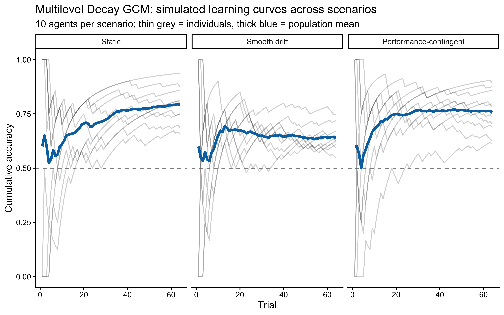
The static panel converges quickly to ceiling; smooth drift plateaus below ceiling because the boundary keeps moving; performance-contingent shifts produce a noisy plateau as different subjects flip at different absolute trials and average over each other.
The Stan model implements the hierarchy described above, with three architectural choices that matter for performance:
model block, not in transformed parameters. Memory is held in plain int arrays during the loop, so the autodiff tape never sees the per-trial scan. prob_cat1 and (optionally gated) log_lik are recomputed once per saved draw in generated quantities.w_1; standard z-offset for log_c, log_lambda, and logit_bias).transformed data, indexed by stim_id instead of read from per-trial features.gcm_ml_decay_stan <- "
// Multilevel Decay Generalized Context Model
// All individual parameters use non-centred parameterisation:
// - w_1 via logit-normal NCP (eliminates Dirichlet funnel geometry)
// - log_c, log_lambda, logit_bias via standard z-offset NCP
// Sequential likelihood is computed directly in the model block (no
// prob_cat1 stored in transformed parameters), avoiding a large var-vector
// on the autodiff tape. prob_cat1 and log_lik are recomputed once per saved
// draw in generated quantities.
data {
int<lower=1> N_total;
int<lower=1> N_subjects;
int<lower=1> N_features;
int<lower=1> N_unique_stim;
int<lower=1> max_trials_per_subject;
array[N_subjects] int<lower=1, upper=N_total> subj_start;
array[N_subjects] int<lower=1, upper=N_total> subj_end;
array[N_total] int<lower=1, upper=N_unique_stim> stim_id;
array[N_total] int<lower=0, upper=1> y;
array[N_unique_stim, N_features] real unique_obs;
array[N_total] int<lower=0, upper=1> cat_feedback;
// Hyperparameters
real prior_pop_logit_w_mean;
real<lower=0> prior_pop_logit_w_sigma;
real<lower=0> prior_pop_logit_w_sd_lambda;
real prior_pop_log_c_mu;
real<lower=0> prior_pop_log_c_sigma;
real<lower=0> prior_pop_log_c_lambda;
real prior_pop_log_lambda_mu;
real<lower=0> prior_pop_log_lambda_sigma;
real<lower=0> prior_pop_log_lambda_lambda;
real prior_pop_logit_bias_mu;
real<lower=0> prior_pop_logit_bias_sigma;
real<lower=0> prior_pop_logit_bias_lambda;
int<lower=0, upper=1> run_diagnostics;
}
transformed data {
array[N_unique_stim, N_unique_stim, N_features] real stimulus_abs_diff;
for (i in 1:N_unique_stim)
for (k in 1:N_unique_stim)
for (f in 1:N_features)
stimulus_abs_diff[i, k, f] = abs(unique_obs[i, f] - unique_obs[k, f]);
}
parameters {
// Population attention weight: logit-normal NCP for w_1 (w_2 = 1 - w_1)
real pop_logit_w_mean;
real<lower=0> pop_logit_w_sd;
vector[N_subjects] z_w;
// Population c, lambda, bias
real pop_log_c_mean;
real<lower=0> pop_log_c_sd;
real pop_log_lambda_mean;
real<lower=0> pop_log_lambda_sd;
real pop_logit_bias_mean;
real<lower=0> pop_logit_bias_sd;
// Non-centred individual offsets
vector[N_subjects] z_log_c;
vector[N_subjects] z_log_lambda;
vector[N_subjects] z_logit_bias;
}
transformed parameters {
vector[N_subjects] subj_log_c;
vector[N_subjects] subj_log_lambda;
vector<lower=0, upper=1>[N_subjects] subj_bias;
array[N_subjects] vector[N_features] subj_w;
for (j in 1:N_subjects) {
subj_log_c[j] = pop_log_c_mean + pop_log_c_sd * z_log_c[j];
subj_log_lambda[j] = pop_log_lambda_mean + pop_log_lambda_sd * z_log_lambda[j];
subj_bias[j] = inv_logit(pop_logit_bias_mean + pop_logit_bias_sd * z_logit_bias[j]);
real logit_w = pop_logit_w_mean + pop_logit_w_sd * z_w[j];
subj_w[j][1] = inv_logit(logit_w);
subj_w[j][2] = 1.0 - subj_w[j][1];
}
}
model {
// Population priors
pop_logit_w_mean ~ normal(prior_pop_logit_w_mean, prior_pop_logit_w_sigma);
pop_logit_w_sd ~ exponential(prior_pop_logit_w_sd_lambda);
pop_log_c_mean ~ normal(prior_pop_log_c_mu, prior_pop_log_c_sigma);
pop_log_c_sd ~ exponential(prior_pop_log_c_lambda);
pop_log_lambda_mean ~ normal(prior_pop_log_lambda_mu, prior_pop_log_lambda_sigma);
pop_log_lambda_sd ~ exponential(prior_pop_log_lambda_lambda);
pop_logit_bias_mean ~ normal(prior_pop_logit_bias_mu, prior_pop_logit_bias_sigma);
pop_logit_bias_sd ~ exponential(prior_pop_logit_bias_lambda);
// Non-centred priors
z_w ~ std_normal();
z_log_c ~ std_normal();
z_log_lambda ~ std_normal();
z_logit_bias ~ std_normal();
// Sequential likelihood — local workspace, one subject at a time
{
array[max_trials_per_subject] int mem_stim;
array[max_trials_per_subject] int mem_cat;
array[max_trials_per_subject] int mem_trial;
for (j in 1:N_subjects) {
int n_mem = 0;
real c = exp(subj_log_c[j]);
real lambda = exp(subj_log_lambda[j]);
real bias = subj_bias[j];
for (i in subj_start[j]:subj_end[j]) {
real p_i;
if (n_mem == 0) {
p_i = bias;
} else {
real s1 = 0.0; real s0 = 0.0;
real w1 = 0.0; real w0 = 0.0;
int curr_stim = stim_id[i];
for (e in 1:n_mem) {
real dist = 0.0;
int past_stim = mem_stim[e];
for (f in 1:N_features)
dist += subj_w[j][f] * stimulus_abs_diff[curr_stim, past_stim, f];
real age = (i - subj_start[j] + 1.0) - mem_trial[e];
real decay = exp(-lambda * age);
real sim = exp(-c * dist);
real wt = decay * sim;
if (mem_cat[e] == 1) { s1 += wt; w1 += decay; }
else { s0 += wt; w0 += decay; }
}
real m1 = (w1 > 1e-9) ? s1 / w1 : 0.0;
real m0 = (w0 > 1e-9) ? s0 / w0 : 0.0;
real num = bias * m1;
real den = num + (1.0 - bias) * m0;
p_i = (den > 1e-9) ? num / den : bias;
}
target += bernoulli_lpmf(y[i] | fmax(1e-9, fmin(1.0 - 1e-9, p_i)));
n_mem += 1;
mem_stim[n_mem] = stim_id[i];
mem_cat[n_mem] = cat_feedback[i];
mem_trial[n_mem] = i - subj_start[j] + 1;
}
}
}
}
generated quantities {
// Recompute once per saved draw (not on every leapfrog step).
// prob_cat1 is always filled (needed for PPC); log_lik only when run_diagnostics=1.
vector[N_total] prob_cat1;
vector[N_total] log_lik = rep_vector(0.0, N_total);
{
array[max_trials_per_subject] int mem_stim;
array[max_trials_per_subject] int mem_cat;
array[max_trials_per_subject] int mem_trial;
for (j in 1:N_subjects) {
int n_mem = 0;
real c = exp(subj_log_c[j]);
real lambda = exp(subj_log_lambda[j]);
real bias = subj_bias[j];
for (i in subj_start[j]:subj_end[j]) {
real p_i;
if (n_mem == 0) {
p_i = bias;
} else {
real s1 = 0.0; real s0 = 0.0;
real w1 = 0.0; real w0 = 0.0;
int curr_stim = stim_id[i];
for (e in 1:n_mem) {
real dist = 0.0;
int past_stim = mem_stim[e];
for (f in 1:N_features)
dist += subj_w[j][f] * stimulus_abs_diff[curr_stim, past_stim, f];
real age = (i - subj_start[j] + 1.0) - mem_trial[e];
real decay = exp(-lambda * age);
real sim = exp(-c * dist);
real wt = decay * sim;
if (mem_cat[e] == 1) { s1 += wt; w1 += decay; }
else { s0 += wt; w0 += decay; }
}
real m1 = (w1 > 1e-9) ? s1 / w1 : 0.0;
real m0 = (w0 > 1e-9) ? s0 / w0 : 0.0;
real num = bias * m1;
real den = num + (1.0 - bias) * m0;
p_i = (den > 1e-9) ? num / den : bias;
}
real p_clamp = fmax(1e-9, fmin(1.0 - 1e-9, p_i));
prob_cat1[i] = p_clamp;
if (run_diagnostics)
log_lik[i] = bernoulli_lpmf(y[i] | p_clamp);
n_mem += 1;
mem_stim[n_mem] = stim_id[i];
mem_cat[n_mem] = cat_feedback[i];
mem_trial[n_mem] = i - subj_start[j] + 1;
}
}
}
}
"
stan_file_gcm_ml_decay <- "stan/ch12_gcm_ml_decay.stan"
write_stan_file(gcm_ml_decay_stan, dir = "stan/", basename = "ch12_gcm_ml_decay.stan")[1] "/Users/au209589/Dropbox/Teaching/AdvancedCognitiveModeling23_book/stan/ch12_gcm_ml_decay.stan"mod_gcm_ml_decay <- cmdstan_model(stan_file_gcm_ml_decay)build_ml_stan_data <- function(ml_data, stimulus_info, run_diagnostics = 0L) {
ml_data <- ml_data |>
arrange(agent_id, trial_within_subject) |>
mutate(row = row_number())
unique_stim <- stimulus_info |>
arrange(stimulus) |>
mutate(unique_idx = row_number())
stim_lookup <- setNames(unique_stim$unique_idx, unique_stim$stimulus)
subj_idx <- ml_data |>
group_by(agent_id) |>
summarise(start = min(row), end = max(row), .groups = "drop") |>
arrange(agent_id)
list(
N_total = nrow(ml_data),
N_subjects = nrow(subj_idx),
N_features = 2L,
N_unique_stim = nrow(unique_stim),
max_trials_per_subject = as.integer(max(subj_idx$end - subj_idx$start + 1L)),
subj_start = as.integer(subj_idx$start),
subj_end = as.integer(subj_idx$end),
stim_id = as.integer(stim_lookup[as.character(ml_data$stimulus_id)]),
y = as.integer(ml_data$sim_response),
unique_obs = as.matrix(unique_stim[, c("height", "position")]),
cat_feedback = as.integer(ml_data$observed_feedback),
prior_pop_logit_w_mean = 0,
prior_pop_logit_w_sigma = 1.0,
prior_pop_logit_w_sd_lambda = 2.0,
prior_pop_log_c_mu = LOG_C_PRIOR_MEAN,
prior_pop_log_c_sigma = LOG_C_PRIOR_SD,
prior_pop_log_c_lambda = 2.0,
prior_pop_log_lambda_mu = LOG_LAMBDA_PRIOR_MEAN,
prior_pop_log_lambda_sigma = LOG_LAMBDA_PRIOR_SD,
prior_pop_log_lambda_lambda = 2.0,
prior_pop_logit_bias_mu = 0,
prior_pop_logit_bias_sigma = 1.0,
prior_pop_logit_bias_lambda = 2.0,
run_diagnostics = as.integer(run_diagnostics)
)
}The Exponential(2) priors on the population SDs (*_lambda = 2) have median 0.35 and 95th percentile ≈ 1.5 — wide enough to allow real between-subject variation, tight enough to keep NUTS off the worst part of the funnel when only 10 subjects are observed. We keep run_diagnostics = 0 for the main fits because we will not run LFO at the multilevel level here; flip it to 1 only when computing per-trial log_lik is needed.
We compile once and fit each scenario in turn. With 10 subjects × 64 trials × 4 chains × 2000 iterations, expect each fit to take a few minutes on a modern laptop.
ml_decay_fit_files <- map(ml_scenarios, function(scen)
here("simmodels", paste0("ch12_gcm_ml_decay_fit_", scen, ".rds"))
) |> setNames(ml_scenarios)
if (regenerate_simulations || !all(file.exists(unlist(ml_decay_fit_files)))) {
ml_decay_fits <- map(ml_scenarios, function(scen) {
cat("Fitting multilevel decay GCM:", scen, "\n")
dat <- build_ml_stan_data(ml_decay_sims[[scen]]$data, stimulus_info,
run_diagnostics = 0L)
fit <- mod_gcm_ml_decay$sample(
data = dat,
seed = 700 + match(scen, ml_scenarios),
chains = 4,
parallel_chains = min(4, availableCores()),
iter_warmup = 1000,
iter_sampling = 1000,
adapt_delta = 0.95,
max_treedepth = 12,
refresh = 200,
init = 0.5
)
fit$save_object(ml_decay_fit_files[[scen]])
fit
}) |> setNames(ml_scenarios)
cat("Multilevel decay GCM fits computed and saved.\n")
} else {
ml_decay_fits <- map(ml_scenarios, function(scen)
readRDS(ml_decay_fit_files[[scen]])
) |> setNames(ml_scenarios)
cat("Loaded existing multilevel decay GCM fits.\n")
}Loaded existing multilevel decay GCM fits.ml_decay_diag <- map_dfr(ml_scenarios, function(scen) {
diagnostic_summary_table(
ml_decay_fits[[scen]],
params = c("pop_logit_w_mean", "pop_log_c_mean",
"pop_log_lambda_mean", "pop_logit_bias_mean",
"pop_logit_w_sd", "pop_log_c_sd",
"pop_log_lambda_sd", "pop_logit_bias_sd")
) |> mutate(scenario = scen)
})
print(ml_decay_diag |>
dplyr::select(scenario, metric, value, threshold, pass))# A tibble: 18 × 5
scenario metric value threshold pass
<chr> <chr> <dbl> <chr> <lgl>
1 static Divergences (zero tolerance) 0 == 0 TRUE
2 static Max rank-normalised R-hat 2.84 < 1.01 FALSE
3 static Min bulk ESS 4.65 > 400 FALSE
4 static Min tail ESS 13.3 > 400 FALSE
5 static Min E-BFMI 1.12 > 0.2 TRUE
6 static Max MCSE / posterior SD 0.488 < 0.05 FALSE
7 contingent_shift Divergences (zero tolerance) 0 == 0 TRUE
8 contingent_shift Max rank-normalised R-hat 2.93 < 1.01 FALSE
9 contingent_shift Min bulk ESS 4.59 > 400 FALSE
10 contingent_shift Min tail ESS 11.2 > 400 FALSE
11 contingent_shift Min E-BFMI 0.971 > 0.2 TRUE
12 contingent_shift Max MCSE / posterior SD 0.492 < 0.05 FALSE
13 drift Divergences (zero tolerance) 0 == 0 TRUE
14 drift Max rank-normalised R-hat 1.00 < 1.01 TRUE
15 drift Min bulk ESS 944. > 400 TRUE
16 drift Min tail ESS 493. > 400 TRUE
17 drift Min E-BFMI 0.694 > 0.2 TRUE
18 drift Max MCSE / posterior SD 0.0302 < 0.05 TRUE The diagnostics tell a scenario-stratified story. Drift converges cleanly: zero divergences, R̂ at 1.00, bulk and tail ESS comfortably above 400, MCSE well within tolerance. Static and contingent_shift fail in a structured way: zero divergences and good E-BFMI (so HMC is exploring the energy distribution adequately), but R̂ ≈ 2.9 and ESS in the single digits — the chains are settling in genuinely different regions of parameter space rather than converging on a common posterior.
This pattern is itself diagnostic. The combination no divergences + good E-BFMI + catastrophic R̂ points away from local pathological geometry and toward a global identifiability problem: the chains are exploring a posterior in which some parameter direction is essentially flat, and different chains commit to different positions along that direction. Below we will see that the offending direction is the population mean of log_lambda, and that the failure pattern maps cleanly onto how much information each task carries about decay.
A note on what we report. Because R̂ for the static and contingent_shift fits is far above any acceptable threshold, the posterior summaries from those runs should not be read as valid inference about the true population. We present them anyway because the failure pattern — visible in the recovery plots below — is part of the lesson: hierarchical pooling propagates identifiability problems from the individual level upward rather than fixing them. So there’s that for lazy attempts to fix a problem :-)
pop_truth <- with(pop_params_sim, tibble(
variable = c("pop_logit_w_mean", "pop_log_c_mean",
"pop_log_lambda_mean", "pop_logit_bias_mean"),
truth = c(pop_logit_w_mean, pop_log_c_mean,
pop_log_lambda_mean, pop_logit_bias_mean)
))
# Extract all posterior draws for the population means
pop_draws <- map_dfr(ml_scenarios, function(scen) {
as_draws_df(ml_decay_fits[[scen]]$draws(pop_truth$variable)) |>
pivot_longer(cols = all_of(pop_truth$variable),
names_to = "variable", values_to = "value") |>
mutate(scenario = scen)
}) |>
mutate(scenario = factor(scenario, levels = ml_scenarios,
labels = c("Static", "Drift", "Contingent shift")),
variable = factor(variable, levels = pop_truth$variable))
# Precompute prior densities for overlay
prior_params <- tibble(
variable = factor(pop_truth$variable, levels = pop_truth$variable),
mu = c(0, LOG_C_PRIOR_MEAN, LOG_LAMBDA_PRIOR_MEAN, 0),
sigma = c(1, LOG_C_PRIOR_SD, LOG_LAMBDA_PRIOR_SD, 1)
)
prior_density <- prior_params |>
group_by(variable) |>
reframe(
x = seq(mu - 3.5*sigma, mu + 3.5*sigma, length.out = 200),
y = dnorm(x, mu, sigma)
)
ggplot() +
# Prior distribution
geom_line(data = prior_density, aes(x = x, y = y),
linetype = "dotted", color = "black", linewidth = 0.8) +
# Posterior distributions per scenario
geom_density(data = pop_draws, aes(x = value, fill = scenario),
alpha = 0.4, color = NA) +
# Simulation truth
geom_vline(data = pop_truth, aes(xintercept = truth),
linetype = "dashed", color = "red", linewidth = 0.8) +
facet_wrap(~variable, scales = "free", ncol = 2) +
scale_fill_viridis_d(option = "plasma", end = 0.85) +
labs(
title = "Population-level parameter recovery",
subtitle = "Posterior densities vs Simulation Truth (red dashed) and Prior (black dotted)",
x = "Parameter value (transformed scale)", y = "Density"
) +
theme(legend.position = "bottom")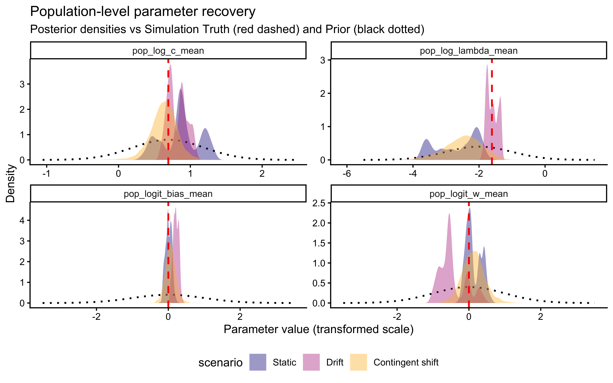
subj_recovery <- map_dfr(ml_scenarios, function(scen) {
fit <- ml_decay_fits[[scen]]
truth <- ml_decay_sims[[scen]]$true_params
s <- fit$summary(variables = c("subj_log_c", "subj_log_lambda")) |>
mutate(
param = if_else(stringr::str_detect(variable, "log_c"),
"log_c", "log_lambda"),
agent_id = as.integer(stringr::str_extract(variable, "\\d+"))
) |>
dplyr::select(agent_id, param, est_mean = mean, est_q5 = q5, est_q95 = q95)
truth_long <- truth |>
dplyr::select(agent_id, log_c_true, log_lambda_true) |>
pivot_longer(cols = c(log_c_true, log_lambda_true),
names_to = "param", values_to = "truth") |>
mutate(param = if_else(param == "log_c_true", "log_c", "log_lambda"))
s |>
left_join(truth_long, by = c("agent_id", "param")) |>
mutate(scenario = scen)
}) |>
mutate(scenario = factor(scenario, levels = ml_scenarios,
labels = c("Static", "Drift", "Contingent shift")))
ggplot(subj_recovery, aes(x = truth, y = est_mean, color = scenario)) +
geom_abline(intercept = 0, slope = 1, linetype = "dashed", color = "grey50") +
geom_pointrange(aes(ymin = est_q5, ymax = est_q95), alpha = 0.7) +
facet_grid(param ~ scenario, scales = "free") +
scale_color_viridis_d(option = "plasma", end = 0.85) +
labs(
title = "Subject-level parameter recovery (with partial pooling)",
subtitle = "Posterior mean ± 90% CI vs simulation truth",
x = "True value", y = "Posterior estimate"
) +
theme(legend.position = "none")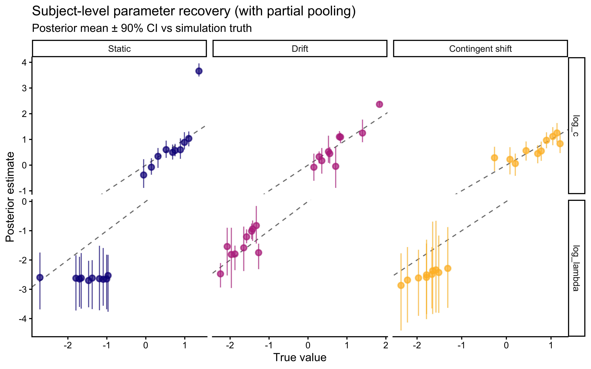
Reading the population-level plot. pop_log_c_mean, pop_logit_bias_mean, and pop_logit_w_mean recover cleanly across all three scenarios: posteriors are concentrated near the simulation truth and well-separated from the prior. pop_log_lambda_mean is where the scenarios diverge. Drift produces a tight posterior centred near the truth — the recovery one would hope for. Static pulls strongly toward the left tail, with mass piled around values much smaller than truth: with no boundary changes, every subject’s data is consistent with near-zero decay, and the population mean is dragged in that direction. Contingent shift is worse than drift but better than static: the posterior is broad and lumpy, sometimes bimodal, spreading across most of the prior range without concentrating on the truth. That ragged, multi-peaked shape is not a kernel-density artefact — it is the visible signature of the R̂ ≈ 2.9 failure. Different chains end up in different parts of the (mean, SD) population-parameter space, and overlaying their draws produces several local peaks rather than a single mode. With proper convergence we would expect a smooth unimodal density; what we see instead is the geometry of an under-identified hyperparameter.
Reading the subject-level plot. The log_c row tells a uniformly successful story: posterior means track the identity line in all three scenarios, with reasonable uncertainty. Partial pooling for \(c\) works as intended.
The log_lambda row is the diagnostic. Under static, every subject’s posterior collapses to roughly the same value (~−2.7) regardless of their true \(\lambda\) — true values span more than three log-units but estimates do not. This is shrinkage without signal: when individual data carry no information about decay, partial pooling drags every subject to a single (mis-estimated) population mean, erasing genuine individual differences. Drift behaves as a hierarchical model is supposed to: posterior means follow the diagonal with sensible uncertainty intervals. Contingent shift sits between the two — there is a positive correlation between truth and estimate, but estimates are heavily compressed toward a central value and the credible intervals are wide. Some signal exists; it is not enough to anchor either the individual estimates or the population hyperparameters.
The lesson. Compare these three columns and the message is hard to miss: hierarchical pooling helps when the population distribution is itself identified, which requires that some individuals contribute information about the parameter in question. Drift satisfies that condition for \(\lambda\); contingent shift satisfies it weakly; static does not satisfy it at all. The multilevel model does not solve the \(\lambda\) identifiability problem — it makes the problem visible at both levels of the hierarchy simultaneously, and it shows what happens when you ask partial pooling to do a job the data cannot support.
Multilevel SBC is the most rigorous way to check that the hierarchical priors and the non-centered parameterisation are working as intended. Because fitting a multilevel model hundreds of times is computationally intensive, we provide the code here as a template for students wishing to perform an exhaustive validation of their own hierarchical extensions.
# 1. Generator: Draws population parameters from priors, then subject
# parameters from those hierarchies, and finally simulates trial data.
make_ml_decay_sbc_generator <- function(scenario, n_subjects = 20) {
SBC_generator_function(
function() {
# Draw population hyperparameters from the priors
pop_logit_w_mean <- rnorm(1, 0, 1)
pop_logit_w_sd <- rexp(1, 2)
pop_log_c_mean <- rnorm(1, LOG_C_PRIOR_MEAN, LOG_C_PRIOR_SD)
pop_log_c_sd <- rexp(1, 2)
pop_log_lambda_mean <- rnorm(1, LOG_LAMBDA_PRIOR_MEAN, LOG_LAMBDA_PRIOR_SD)
pop_log_lambda_sd <- rexp(1, 2)
pop_logit_bias_mean <- rnorm(1, 0, 1)
pop_logit_bias_sd <- rexp(1, 2)
# Simulate one multilevel dataset
sim <- simulate_multilevel_decay_gcm(
n_subjects = n_subjects,
stimulus_info = stimulus_info,
n_blocks = 2, # Fewer blocks for faster SBC
scenario = scenario,
base_seed = sample.int(1e6, 1),
pop_logit_w_mean = pop_logit_w_mean,
pop_logit_w_sd = pop_logit_w_sd,
pop_log_c_mean = pop_log_c_mean,
pop_log_c_sd = pop_log_c_sd,
pop_log_lambda_mean = pop_log_lambda_mean,
pop_log_lambda_sd = pop_log_lambda_sd,
pop_logit_bias_mean = pop_logit_bias_mean,
pop_logit_bias_sd = pop_logit_bias_sd
)
# Return parameters and the list for Stan
list(
parameters = list(
pop_logit_w_mean = pop_logit_w_mean,
pop_log_c_mean = pop_log_c_mean,
pop_log_lambda_mean = pop_log_lambda_mean,
pop_logit_bias_mean = pop_logit_bias_mean
),
generated = build_ml_stan_data(sim$data, stimulus_info)
)
}
)
}
# 2. Backend: Uses the compiled multilevel Stan model.
ml_decay_sbc_backend <- SBC_backend_cmdstan_sample(
mod_gcm_ml_decay,
iter_warmup = 800,
iter_sampling = 800,
chains = 2
)
# 3. Compute SBC. We run on the drift scenario, where the single-subject and
# multilevel fits both showed clean recovery — so any miscalibration that
# surfaces here is attributable to the hierarchical machinery itself
# (priors, non-centered parameterisation) rather than to a task-level
# identifiability problem already diagnosed above.
# n_sbc_iterations_ml <- 100
# ml_sbc_filepath <- here("simdata", "ch12_ml_decay_sbc_results.rds")
#
# if (regenerate_simulations || !file.exists(ml_sbc_filepath)) {
# ml_decay_sbc_generator <- make_ml_decay_sbc_generator(
# scenario = "drift",
# n_subjects = 20
# )
#
# ml_decay_datasets <- generate_datasets(
# ml_decay_sbc_generator,
# n_sims = n_sbc_iterations_ml
# )
#
# ml_sbc_results <- compute_SBC(
# ml_decay_datasets,
# ml_decay_sbc_backend,
# cache_mode = "results",
# cache_location = here("simdata", "ch12_ml_decay_sbc_cache"),
# keep_fits = FALSE
# )
# saveRDS(ml_sbc_results, ml_sbc_filepath)
# cat("Multilevel SBC results computed and saved.\n")
# } else {
# ml_sbc_results <- readRDS(ml_sbc_filepath)
# cat("Loaded existing multilevel SBC results.\n")
# }
#
# # 4. Visualise calibration. The rank histogram and ECDF-difference plot
# # diagnose calibration of the population-level means. A flat rank
# # histogram and an ECDF difference contained within the simultaneous
# # bands indicate that the hierarchical priors and the non-centered
# # parameterisation are jointly well-calibrated for this task structure.
# plot_rank_hist(ml_sbc_results)
# plot_ecdf_diff(ml_sbc_results)
#
# # 5. Parameter recovery across SBC simulations. Each point is one simulated
# # dataset: x is the true population mean drawn from the prior, y is the
# # posterior mean from the corresponding fit, with a 90% CI. Points
# # clustering along the identity line confirm that the model recovers
# # the population-level hyperparameters across the full prior range —
# # a stronger statement than the single-truth recovery shown earlier,
# # because the truths here span the entire prior rather than one fixed
# # value. Systematic deviations (bias, slope ≠ 1, or asymmetric spread
# # in particular regions of the prior) localise where the hierarchical
# # inference breaks down.
# ml_sbc_recovery_df <- ml_sbc_results$stats
#
# p_ml_sbc_recovery <- ggplot(ml_sbc_recovery_df,
# aes(x = simulated_value, y = mean)) +
# geom_pointrange(aes(ymin = q5, ymax = q95),
# alpha = 0.4, color = "#0072B2") +
# geom_abline(intercept = 0, slope = 1,
# color = "red", linetype = "dashed") +
# facet_wrap(~variable, scales = "free") +
# labs(
# title = "Population-Level Parameter Recovery Across SBC Simulations",
# subtitle = "Posterior mean ± 90% CI vs prior-drawn truth (drift scenario)",
# x = "True value (drawn from prior)",
# y = "Posterior mean"
# ) +
# theme_bw()
#
# print(p_ml_sbc_recovery)The simulations in this chapter are deliberately controlled, but several of the patterns we observed translate directly into guidance for fitting the decay GCM to empirical data.
Identifiability is parameter- and task-specific. \(c\), \(w\), and \(\beta\) recovered cleanly across all three scenarios at both the individual and population levels. \(\lambda\) recovered only when the task itself contained the non-stationarity that decay is supposed to explain. Before fitting, ask whether your design exercises the mechanism each parameter governs — if not, expect that parameter to be pinned by the prior and report it that way.
Hierarchical pooling is a magnifier, not a fix. When individual data inform a parameter, the multilevel model sharpens both individual and population estimates (drift). When they do not, partial pooling collapses every subject to a single, poorly-estimated population mean and the chains stop converging (static, contingent shift). If pop_log_lambda_mean shows lumpy or multi-modal posteriors, R̂ ≫ 1.01, or single-digit ESS on real data, the diagnosis is almost always that the task is closer to “static” than the analyst assumed — not that the sampler needs more iterations.
Computational cost scales with subjects × trials. Each leapfrog step touches every trial of every subject, so wall time grows linearly in both. A 10×64 toy and a 100×200 study differ by ~30× in cost — manageable, but worth budgeting before launching a full hierarchical fit, especially when running diagnostics like SBC that require hundreds of refits.
The next two chapters apply the same pipeline to prototype models (Ch. 14) and rule-based models (Ch. 15), which make different commitments about how categories are represented and updated. The contrasts at each pipeline stage — particularly representation and learning — are the central theoretical content of those chapters.